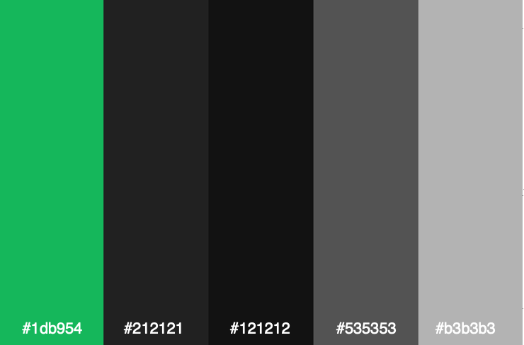
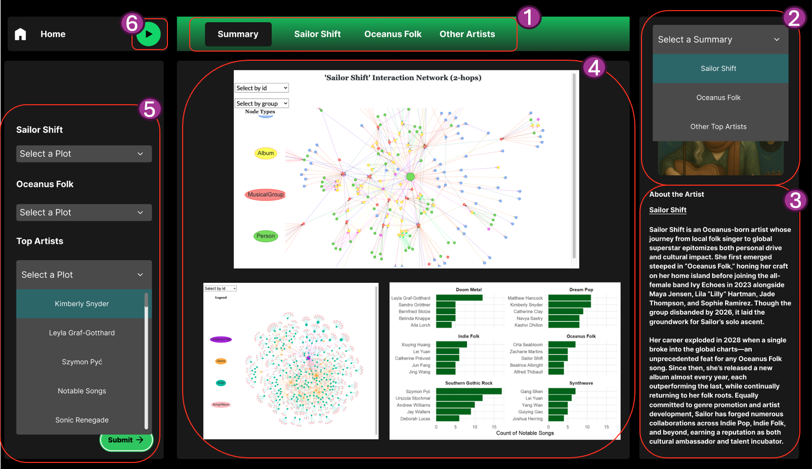
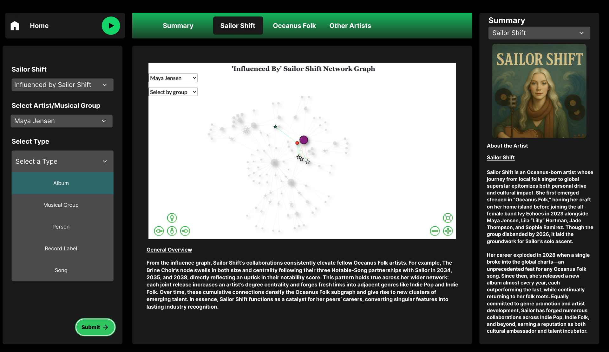
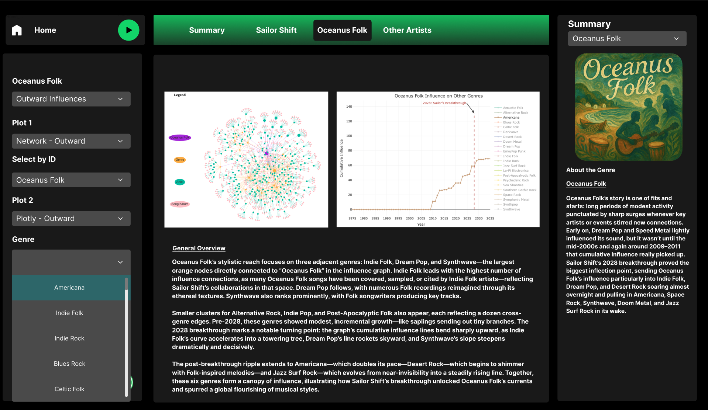
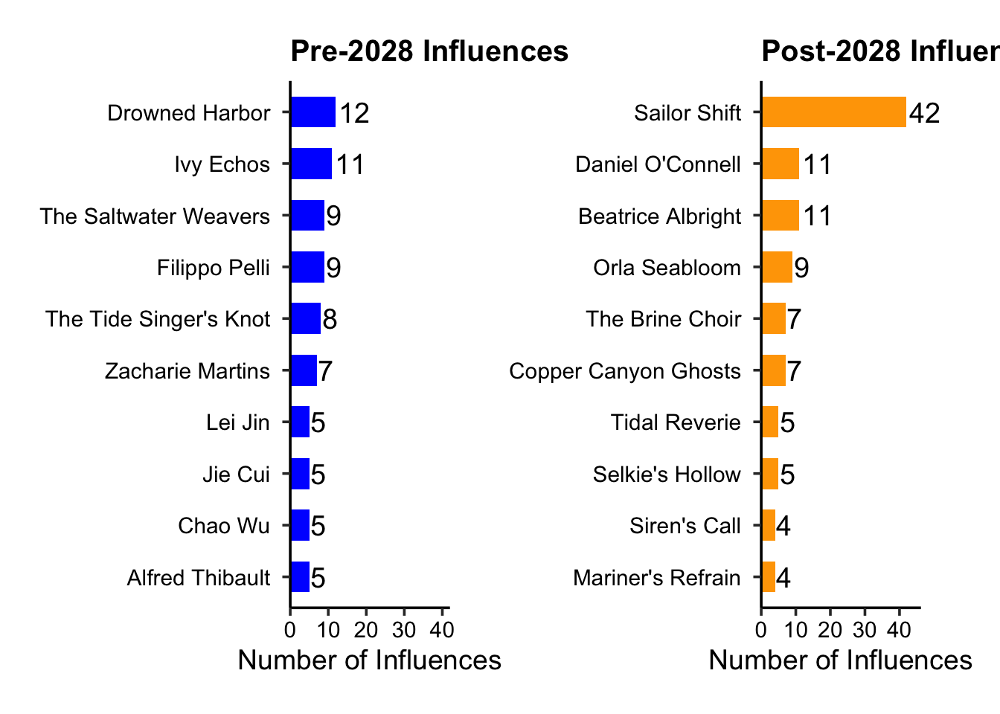
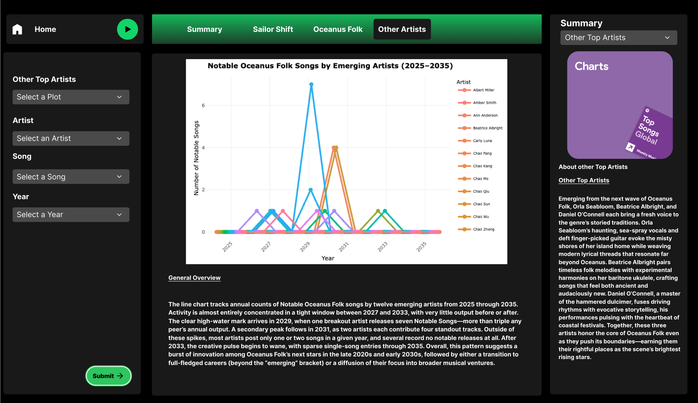
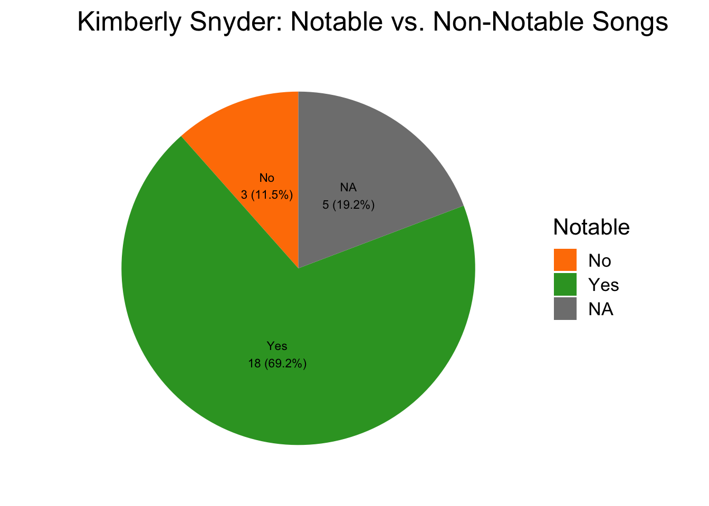
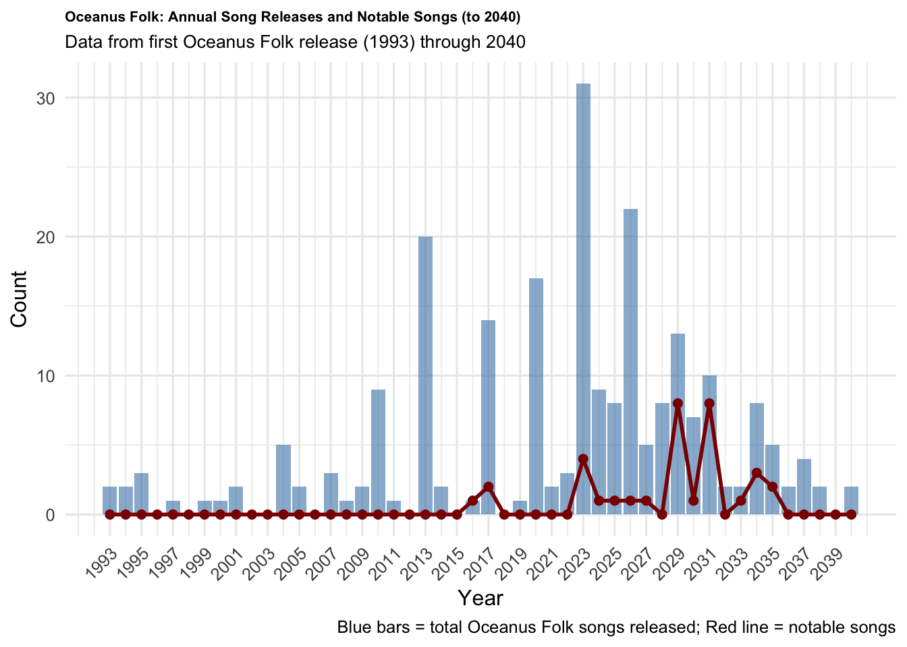
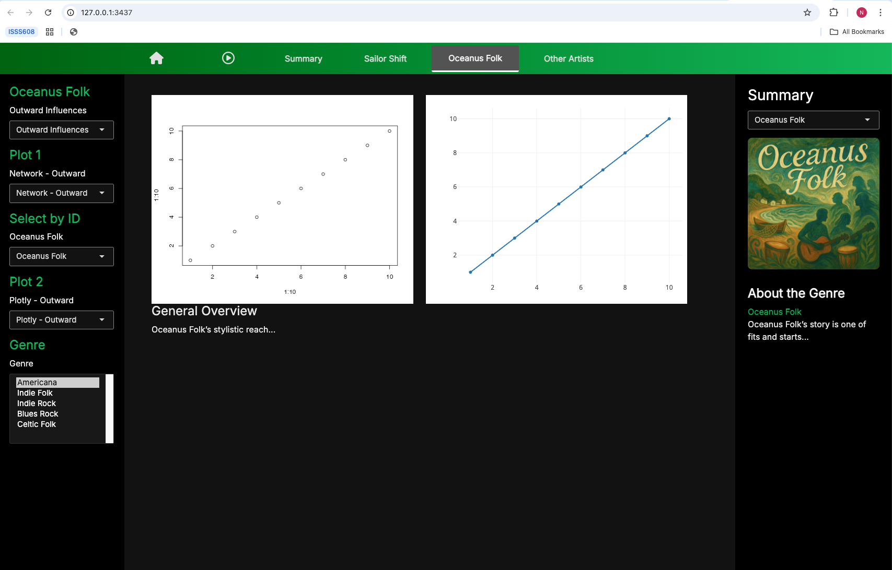

pacman::p_load(tidyverse, jsonlite,
SmartEDA, tidygraph,
ggraph,dplyr,igraph,
visNetwork,RColorBrewer,
htmltools,ggplot2,scales,plotly,tidytext,patchwork, lubridate)Take Home Exercise 3
Take-home Exercise 3: Prototype
For fluidity of the prototype, I will be incorporating the data preparation and plots used under each page of the UI design throughout the storyboard. The data preparation for each plot will be done within the plots’ code chunk according to their specific needs.
The group has decided to do MC1 - https://vast-challenge.github.io/2025/MC1.html which is a challenge to unravel the impact of Sailor Shift and the Oceanus Folk genre.
1. Packages to Use and Loading Data
kg <- fromJSON("data/MC1_graph.json")2. Design Innovation
For this mini-challenge, I propose a Spotify-inspired interface to explore Sailor Shift’s career and the diffusion of Oceanus Folk within a knowledge-graph framework. By leveraging familiar music-streaming conventions, the design aligns domain context with user expectations, facilitates intuitive navigation of complex network data, and enhances engagement through interactive discovery patterns.
There are two important things to take note here: Heuristics and Mental Model. At the heart of my design lies the notion of a mental model which is the internal roadmap users build from prior experience with similar interfaces. Consider everyday digital interactions outside of music apps: at an ATM, a green “Enter” button and red “Cancel” button follow a universal color heuristic, so users immediately know which to press without reading instructions. In ecommerce sites, a shopping-cart icon in the header reliably signals where items aggregate for checkout, exemplifying the consistency and standards heuristic. On mapping apps, pinch-to-zoom and swipe-to-pan gestures obey the recognition-rather-than-recall principle as users don’t need to learn new gestures for each location. Even smartphone home screens employ a grid of app icons, a visual metaphor that people of all ages recognize as launch points.
By borrowing Spotify’s signature dark canvas (deep charcoal backdrops, neon-green accents), minimalist iconography, and rounded “card” elements, we tap directly into that pre-existing framework. Our Shiny dashboard taps directly into users’ existing mental model of a streaming interface. This isn’t just about looking cool, it leverages cognitive affordances that make filters, charts, and network nodes feel instantly familiar. When viewers see glowing emerald highlights on active selections or hover-activated cards that resemble album art, their brains automatically map those cues to music discovery behaviors they’ve internalized. This isn’t merely an aesthetic choice; it leverages key heuristics which are cognitive shortcuts that speed up interaction.
This design strategy minimizes learning overhead and audiences don’t have to decode a new UI language to explore Oceanus Folk’s network; instead, they engage with data through the same visual shorthand that guides their favorite music apps. The high-contrast palette also enhances visual cognition, making multi-series line plots and node graphs pop against a dark field, so patterns in Sailor Shift’s collaborations leap off the screen. In sum, by mirroring Spotify’s color palette and layout principles, we create a cognitively intuitive, emotionally resonant environment that feels musical at first glance.
Currently, Spotify UI web design looks like below:
3. Storyboard: Recreating Spotify UI + Plots
3.1 Colour Scheme

Spotify uses the above colour palette as above image. Specifically, Spotify is known for its neon green accent #1db954, and the rest are dark-charcoal colors.
3.2 Dashboard Plots
To give this challenge a seamless, story-driven exploration of Oceanus Folk and Sailor Shift’s impact, I have organized the visual analytics dashboard into four linked views.
Summary Page
The purpose of this page is to provide a high level snapshot where it provides a plot from each question. The question can mainly be broken down into the artist Sailor Shift, the genre Oceanus Folk and other top artists.
Sailor Shift Page
This page would map Sailor Shift’s personal connections and lineage. It will show who she has been most influenced by over time and who she has collaborated with. In essence, this provides and inwards and outwards influences of Sailor Shift.
Oceanus Folk
Similar to the Sailor Shift page, this will also examine the genre’s collective evolution and external reach. It will measure which genres have influenced Oceanus Folk and vice versa. Furthermore, it will show how Sailor Shift’s influence has shaped Oceanus Folk and how it affected other genres positively.
Other Top Artists
This is to profile rising stars and forecast future talents. It will show the top artists and also notable songs to visualize the careers of top artists and predict the next Oceanus Folk stars.
Below is the recreated UI for our Shiny App using Figma (click link to view the Figma design I have done).
3.2.1 Summary Page

3.2.1.1 UI Flow and Components
The components of the UI would work as follows:
Top Navigation Bar: A fixed bar at the top of the page that lets you switch quickly between the four thematic lenses: Summary, Sailor Shift, Oceanus Folk, and Other Artists. Selecting a tab refreshes every dependent panel so you always see coherent information for the chosen lens.
Right Sidebar (Category Picker): The sidebar lets users choose a category, instantly displaying a concise introductory summary for the selection.
Right Sidebar (Description of Summary): Directly beneath the picker, this panel gives a tight written brief introduction of the category chosen in selector. This allow users to absorb the headline insight before exploring the visuals.
Main Plots: The centre stage where interactive charts live. On Summary, you’ll see three signature plots, one pulled from each of the other lenses to create an at-a-glance dashboard (think: Sailor’s outgoing influences, an Oceanus Folk influence visNetwork graph, and an interactive plot of rising artists).
Left Sidebar: A compact traywith sliders and drop-downs that refine the canvas in real time. On the Summary page you can choose which signature plots appear; within Sailor Shift you might want to see who she collaborated with or who has influenced her.
Play Button: A mini-player, complete with a Spotify-style play button which allows visitors hear Oceanus Folk for themselves. I’ve hand-picked a playlist of tracks whose textures, rhythms, and sea-salt harmonies capture the spirit of this fictional genre, drawn from years of obsessive music-digging. Press play, close your eyes, and the visuals on screen will suddenly have a soundtrack:
What I think Oceanus Folk sounds like
Oceanus Folk mixes gentle acoustic guitar or ukulele patterns with concertina or whistle lines and light, brushed percussion in a steady sway. Vocals are usually sung in close harmony, creating an intimate, communal feel, while subtle ambient sounds of waves, gull calls, the creak of docks sit low in the mix to place the listener by the sea. Modern touches such as soft synth pads or reverb-soaked electric-guitar swells keep it current without losing its coastal roots, giving the music a mellow, reflective mood that feels both nostalgic and quietly uplifting.
3.2.2 Module 1: Sailor Shift

On the Sailor Shift tab you can explore her creative network from two complementary angles:
“Influenced by Sailor Shift” graph: a visNetwork visualisation that maps every artist, band, album, song, or label touched by Sailor’s work. Follow direct collaborations, then pan outward to see second-degree ripples across the wider Oceanus Folk scene.
Code
nodes_tbl <- as_tibble(kg$nodes) edges_tbl <- as_tibble(kg$links) all_node_type_colors <- c( "Song" = "#FF5733", "Album" = "lightblue", "Person" = "deepskyblue", "MusicalGroup" = "purple", "RecordLabel" = "lightgreen", "Unknown" = "gray" ) all_edge_type_colors <- c( "PerformerOf" = "#FF5733", "ComposerOf" = "#33FF57", "ProducerOf" = "#3357FF", "LyricistOf" = "#FF33F5", "RecordedBy" = "#F5FF33", "InterpolatesFrom" = "#8A2BE2", "InStyleOf" = "#DAA520", "LyricalReferenceTo" = "#5F9EA0", "CoverOf" = "#DC143C", "DirectlySamples" = "#6A5ACD", "DistributedBy" = "#20B2AA", "MemberOf" = "#8B4513", "default" = "#CCCCCC" ) target_name <- "Sailor Shift" # --- Get target node ID --- sailor_node <- nodes_tbl %>% filter(name == target_name) if (nrow(sailor_node) == 0) stop(paste("No node named '", target_name, "' found.", sep="")) sailor_id <- as.character(sailor_node$id) # Helper function for HTML details in tooltips get_html_detail <- function(value, label) { if (!is.null(value) && !is.na(value) && as.character(value) != "") { return(paste0("<b>", label, ":</b> ", as.character(value), "<br>")) } return("") } # --- Define the specific edge types for this new visualization --- desired_edge_types_for_group_interactions <- c( "InterpolatesFrom", "DirectlySamples", "InStyleOf", "LyricalReferenceTo", "MemberOf" ) nodes_tbl_cleaned <- nodes_tbl %>% mutate(id = as.character(id)) %>% mutate(id = trimws(id)) %>% filter(!is.na(id) & id != "") %>% mutate(`Node Type` = trimws(ifelse(is.na(`Node Type`), "Unknown", as.character(`Node Type`)))) %>% distinct(id, .keep_all = TRUE) # Add missing columns with NA if they don't exist if (!"stage_name" %in% names(nodes_tbl_cleaned)) nodes_tbl_cleaned$stage_name <- NA_character_ if (!"release_date" %in% names(nodes_tbl_cleaned)) nodes_tbl_cleaned$release_date <- NA_character_ if (!"genre" %in% names(nodes_tbl_cleaned)) nodes_tbl_cleaned$genre <- NA_character_ if (!"notable" %in% names(nodes_tbl_cleaned)) nodes_tbl_cleaned$notable <- NA # Get target node ID sailor_node <- nodes_tbl_cleaned %>% filter(name == target_name) if (nrow(sailor_node) == 0) stop(paste("No node named '", target_name, "' found in cleaned data.", sep="")) sailor_id <- as.character(sailor_node$id) # Prepare edges for igraph and visNetwork edges_df_processed <- edges_tbl %>% select(source, target, `Edge Type`, key) %>% mutate(across(c(source, target), as.character)) %>% filter(source %in% nodes_tbl_cleaned$id & target %in% nodes_tbl_cleaned$id) %>% rename(from = source, to = target) relevant_edges_for_group_interactions <- edges_df_processed %>% filter(`Edge Type` %in% desired_edge_types_for_group_interactions) nodes_connected_by_specific_edges <- unique(c(relevant_edges_for_group_interactions$from, relevant_edges_for_group_interactions$to)) target_group_node_ids <- nodes_tbl_cleaned %>% filter(id %in% nodes_connected_by_specific_edges) %>% filter(`Node Type` %in% c("MusicalGroup", "Person")) %>% pull(id) target_group_node_ids <- unique(c(target_group_node_ids, sailor_id)) # Prepare the final nodes for the visualization # addition of differnt color to differentiate Sailor Shift, increasing node size. nodes_for_new_vis <- nodes_tbl_cleaned %>% filter(id %in% target_group_node_ids) %>% rowwise() %>% mutate( id = as.character(id), label = name, title = paste0( "<b>Name:</b> ", name, "<br>", "<b>Node Type:</b> ", `Node Type`, "<br>", get_html_detail(stage_name, "Stage Name"), get_html_detail(release_date, "Release Date"), get_html_detail(genre, "Genre"), get_html_detail(notable, "Notable") ), group = `Node Type`, size = ifelse(id == sailor_id, 30, 20), # Increase size of sailor shift node color = ifelse(id == sailor_id, "gold", NA) # Only Sailor Shift gets a custom color ) %>% ungroup() # Prepare the final edges for the visualization edges_for_new_vis <- relevant_edges_for_group_interactions %>% filter(from %in% nodes_for_new_vis$id & to %in% nodes_for_new_vis$id) %>% mutate( label = `Edge Type`, title = `Edge Type`, arrows = "to", color = recode(`Edge Type`, !!!all_edge_type_colors, .default = all_edge_type_colors["default"]) ) genre_inference_edge_types <- c("PerformerOf", "ComposerOf", "ProducerOf", "LyricistOf", "RecordedBy") # Prepare edges_igraph_df for filtering and visNetwork edges_igraph_df <- edges_tbl %>% select(source, target, `Edge Type`, key) %>% mutate(across(c(source, target), as.character)) %>% rename(from = source, to = target) # Rename to from/to for visNetwork artiste_song_genre_links <- edges_igraph_df %>% filter(`Edge Type` %in% genre_inference_edge_types) %>% inner_join(nodes_tbl_cleaned %>% select(id, `Node Type`, genre), by = c("to" = "id")) %>% filter(`Node Type` == "Song") %>% # Ensure the target node is a Song select(artiste_id = from, song_genre = genre) %>% filter(!is.na(song_genre) & song_genre != "") # Only consider songs with a defined genre inferred_genres_for_artistes <- artiste_song_genre_links %>% group_by(artiste_id) %>% summarise( inferred_genre = paste(sort(unique(song_genre)), collapse = ", "), .groups = 'drop' ) # Global Definitions for inward and outward directed graph desired_edge_types_to_display <- c( "PerformerOf", "ComposerOf", "ProducerOf", "LyricistOf", "RecordedBy", "InterpolatesFrom", "InStyleOf", "LyricalReferenceTo", "CoverOf", "DirectlySamples", "DistributedBy", "MemberOf" ) get_html_detail <- function(row, col, label) { value <- row[[col]] if (!is.null(value) && !is.na(value) && as.character(value) != "") { return(paste0("<b>", label, ":</b> ", as.character(value), "<br>")) } return("") } # Simulate missing data/variables for a runnable example if (!exists("inferred_genres_for_artistes")) { inferred_genres_for_artistes <- tibble( artiste_id = character(), inferred_genre = character() ) } if (!exists("groups_for_visnetwork_combined")) { groups_for_visnetwork_combined <- tibble( id = names(all_node_type_colors), color = all_node_type_colors ) } if (!exists("legend_edge_types_to_display")) { legend_edge_types_to_display <- desired_edge_types_to_display[desired_edge_types_to_display %in% names(all_edge_type_colors)] } # Improved release_date parsing and year extraction nodes_tbl_cleaned <- nodes_tbl %>% mutate(id = as.character(id)) %>% mutate(id = trimws(id)) %>% mutate(id = tolower(id)) %>% distinct(id, .keep_all = TRUE) %>% mutate( release_date_parsed = suppressWarnings(parse_date_time(release_date, orders = c("ymd", "Ymd", "Y-m-d", "Y/m/d", "Y"))), release_year = ifelse( !is.na(release_date_parsed), year(release_date_parsed), suppressWarnings(as.integer(str_extract(as.character(release_date), "\\d{4}"))) ) ) if ("Node Type" %in% names(nodes_tbl_cleaned)) { nodes_tbl_cleaned <- nodes_tbl_cleaned %>% mutate(`Node Type` = trimws(`Node Type`)) } else { warning("Column 'Node Type' not found in nodes_tbl_cleaned. Node typing might be affected.") nodes_tbl_cleaned <- nodes_tbl_cleaned %>% mutate(`Node Type` = "Unknown") } if (!"notoriety_date" %in% names(nodes_tbl_cleaned) || all(is.na(nodes_tbl_cleaned$notoriety_date))) { set.seed(456) nodes_tbl_cleaned <- nodes_tbl_cleaned %>% mutate( temp_release_date = ymd(release_date, quiet = TRUE), notoriety_date = if_else( !is.na(temp_release_date) & sample(c(TRUE, FALSE), n(), replace = TRUE, prob = c(0.15, 0.85)), temp_release_date + days(sample(30:365, n(), replace = TRUE)), as.Date(NA) ), notoriety_year = year(notoriety_date) ) %>% select(-temp_release_date) } else { nodes_tbl_cleaned <- nodes_tbl_cleaned %>% mutate(notoriety_year = suppressWarnings(as.integer(str_extract(as.character(notoriety_date), "\\d{4}")))) } if (!"notable" %in% names(nodes_tbl_cleaned)) { set.seed(123) nodes_tbl_cleaned <- nodes_tbl_cleaned %>% mutate(notable = sample(c(TRUE, FALSE), n(), replace = TRUE, prob = c(0.2, 0.8))) } if (!"stage_name" %in% names(nodes_tbl_cleaned)) { nodes_tbl_cleaned$stage_name <- NA_character_ } if (!"genre" %in% names(nodes_tbl_cleaned)) { nodes_tbl_cleaned$genre <- NA_character_ } # Identify Sailor Shift Node target_name <- "Sailor Shift" sailor_node <- nodes_tbl_cleaned %>% filter(tolower(name) == tolower(target_name)) if (nrow(sailor_node) == 0) stop(paste("No node named '", target_name, "' found.", sep="")) sailor_id <- sailor_node$id valid_node_ids_set <- unique(nodes_tbl_cleaned$id) edges_igraph_df <- edges_igraph_df %>% filter(from %in% valid_node_ids_set & to %in% valid_node_ids_set) # Songs linked to Sailor Shift (direct edges) sailor_songs <- edges_igraph_df %>% filter(`Edge Type` %in% desired_edge_types_to_display, from == sailor_id | to == sailor_id) %>% mutate(target_id = ifelse(from == sailor_id, to, from)) %>% inner_join(nodes_tbl_cleaned, by = c("target_id" = "id")) %>% filter(`Node Type` == "Song") %>% pull(target_id) # Albums linked to Sailor Shift (direct edges) sailor_albums <- edges_igraph_df %>% filter(`Edge Type` %in% desired_edge_types_to_display, from == sailor_id | to == sailor_id) %>% mutate(target_id = ifelse(from == sailor_id, to, from)) %>% inner_join(nodes_tbl_cleaned, by = c("target_id" = "id")) %>% filter(`Node Type` == "Album") %>% pull(target_id) # Songs/albums that link to Sailor Shift's songs or albums linked_in_targets <- edges_igraph_df %>% filter(`Edge Type` %in% desired_edge_types_to_display, to %in% union(sailor_songs, sailor_albums)) %>% pull(from) # All songs + albums to include all_in_targets <- union(union(sailor_songs, sailor_albums), linked_in_targets) # Contributors to those songs/albums contributors_to_targets <- edges_igraph_df %>% filter(`Edge Type` %in% desired_edge_types_to_display, to %in% all_in_targets) # Edges to Sailor Shift or her songs/albums edges_to_sailor <- edges_igraph_df %>% filter(`Edge Type` %in% desired_edge_types_to_display, to == sailor_id | to %in% union(sailor_songs, sailor_albums)) # Final inward edge set edges_inward_filtered <- bind_rows(edges_to_sailor, contributors_to_targets) %>% distinct(from, to, `Edge Type`, key) # Final node set inward_ids <- unique(c(edges_inward_filtered$from, edges_inward_filtered$to, sailor_id)) # Gradient palettes for songs and albums song_palette_func <- colorRampPalette(brewer.pal(9, "YlOrRd")) # Songs: yellow to red album_palette_func <- colorRampPalette(brewer.pal(9, "PuBuGn")) # Albums: purple to green/blue min_song_year <- nodes_tbl_cleaned %>% filter(`Node Type` == "Song" & id %in% inward_ids) %>% pull(release_year) %>% min(na.rm = TRUE) max_song_year <- nodes_tbl_cleaned %>% filter(`Node Type` == "Song" & id %in% inward_ids) %>% pull(release_year) %>% max(na.rm = TRUE) min_album_year <- nodes_tbl_cleaned %>% filter(`Node Type` == "Album" & id %in% inward_ids) %>% pull(release_year) %>% min(na.rm = TRUE) max_album_year <- nodes_tbl_cleaned %>% filter(`Node Type` == "Album" & id %in% inward_ids) %>% pull(release_year) %>% max(na.rm = TRUE) nodes_inward_vis <- nodes_tbl_cleaned %>% filter(id %in% inward_ids) %>% left_join(inferred_genres_for_artistes, by = c("id" = "artiste_id")) %>% rowwise() %>% mutate( label = name, title = paste0( "<b>Name:</b> ", name, "<br>", "<b>Node Type:</b> ", `Node Type`, "<br>", get_html_detail(cur_data(), "stage_name", "Stage Name"), get_html_detail(cur_data(), "release_date", "Release Date"), get_html_detail(cur_data(), "genre", "Genre (Node)"), get_html_detail(cur_data(), "inferred_genre", "Genre (Inferred)"), get_html_detail(cur_data(), "notable", "Notable") ), group = `Node Type`, size = case_when( id == sailor_id ~ 60 # Other nodes will be set by degree below ), shape = case_when( (`Node Type` %in% c("Song", "Album")) & notable ~ "star", TRUE ~ "dot" ), color.background = case_when( id == sailor_id ~ "gold", `Node Type` == "Song" & !is.na(release_year) ~ { if (min_song_year == max_song_year) { song_palette_func(1)[1] } else { scaled_year <- (release_year - min_song_year) / (max_song_year - min_song_year) scaled_year <- pmax(0, pmin(1, scaled_year)) song_palette_func(100)[round(scaled_year * 99) + 1] } }, `Node Type` == "Album" & !is.na(release_year) ~ { if (min_album_year == max_album_year) { album_palette_func(1)[1] } else { scaled_year <- (release_year - min_album_year) / (max_album_year - min_album_year) scaled_year <- pmax(0, pmin(1, scaled_year)) album_palette_func(100)[round(scaled_year * 99) + 1] } }, TRUE ~ unname(all_node_type_colors[as.character(`Node Type`)]) ), color.background = ifelse(is.na(color.background), all_node_type_colors["Unknown"], color.background), color.border = "black", color.highlight.background = "red", color.highlight.border = "darkred", color.hover.background = "lightgray", color.hover.border = "darkgray" ) %>% ungroup() edges_inward_final <- edges_inward_filtered %>% filter(from %in% nodes_inward_vis$id & to %in% nodes_inward_vis$id) %>% group_by(from, to) %>% summarise( aggregated_label = paste(sort(unique(`Edge Type`)), collapse = ", "), color = all_edge_type_colors[first(`Edge Type`)], arrows = "to", .groups = 'drop' ) %>% mutate( label = aggregated_label, title = aggregated_label, color = ifelse(is.na(color), all_edge_type_colors["default"], color) ) # Calculate degree for each node in the subgraph degree_df <- edges_inward_final %>% select(from, to) %>% pivot_longer(cols = c(from, to), values_to = "id") %>% count(id, name = "degree") # Optionally rescale for better visualization rescale <- function(x, to = c(15, 150)) { rng <- range(x, na.rm = TRUE) if (diff(rng) == 0) return(rep(mean(to), length(x))) (x - rng[1]) / diff(rng) * diff(to) + to[1] } degree_df$degree_scaled <- rescale(degree_df$degree) # Join degree to nodes_inward_vis and update size nodes_inward_vis <- nodes_inward_vis %>% left_join(degree_df, by = "id") %>% mutate(size = ifelse(id == sailor_id, 60, degree_scaled)) graph_inward <- visNetwork(nodes_inward_vis, edges_inward_final, main = paste0("'Influenced By' ",target_name," Network Graph")) %>% visNodes( color = list( background = ~color.background, border = "black", highlight = list(background = "red", border = "darkred"), hover = list(background = "lightgray", border = "darkgray") ), shadow = TRUE, font = list(size = 12) # Do NOT set size or shape here! ) %>% visEdges( arrows = "to", label = ~label, font = list(size = 10, align = "middle"), title = ~title, color = list(color = ~color, highlight = ~color), smooth = list(enabled = TRUE, type = "continuous", roundness = 0.5), width = 1 ) %>% visOptions( highlightNearest = list(enabled = TRUE, degree = 2, hover = TRUE, algorithm = "hierarchical"), nodesIdSelection = list(enabled = TRUE, selected = sailor_id, useLabels = TRUE), selectedBy = "group" ) %>% { vis_obj <- . for (i in 1:nrow(groups_for_visnetwork_combined)) { vis_obj <- vis_obj %>% visGroups(groupname = groups_for_visnetwork_combined$id[i], color = groups_for_visnetwork_combined$color[i]) } vis_obj } %>% visInteraction(navigationButtons = TRUE, keyboard = TRUE) %>% visIgraphLayout(layout = "layout_with_fr", randomSeed = 1234) %>% visPhysics(enabled = FALSE) graph_inward“Influenced Sailor Shift” graph: flip the perspective to trace the people, genres, and industry figures who shaped Sailor’s sound throughout her career.
Code
get_html_detail <- function(value, label) { if (!is.null(value) && !is.na(value) && as.character(value) != "") { return(paste0("<b>", label, ":</b> ", as.character(value), "<br>")) } return("") } # --- Simulate missing data/variables for a runnable example --- if (!exists("inferred_genres_for_artistes")) { inferred_genres_for_artistes <- tibble( artiste_id = character(), inferred_genre = character() ) } if (!exists("groups_for_visnetwork_combined")) { groups_for_visnetwork_combined <- tibble( id = names(all_node_type_colors), color = all_node_type_colors ) } if (!exists("legend_edge_types_to_display")) { legend_edge_types_to_display <- desired_edge_types_to_display[desired_edge_types_to_display %in% names(all_edge_type_colors)] } # --- Improved release_date parsing and year extraction --- nodes_tbl_cleaned <- nodes_tbl %>% mutate(id = as.character(id)) %>% mutate(id = trimws(id)) %>% mutate(id = tolower(id)) %>% distinct(id, .keep_all = TRUE) %>% mutate( release_date_parsed = suppressWarnings(parse_date_time(release_date, orders = c("ymd", "Ymd", "Y-m-d", "Y/m/d", "Y"))), release_year = ifelse( !is.na(release_date_parsed), year(release_date_parsed), suppressWarnings(as.integer(str_extract(as.character(release_date), "\\d{4}"))) ) ) if ("Node Type" %in% names(nodes_tbl_cleaned)) { nodes_tbl_cleaned <- nodes_tbl_cleaned %>% mutate(`Node Type` = trimws(`Node Type`)) } else { warning("Column 'Node Type' not found in nodes_tbl_cleaned. Node typing might be affected.") nodes_tbl_cleaned <- nodes_tbl_cleaned %>% mutate(`Node Type` = "Unknown") } if (!"notoriety_date" %in% names(nodes_tbl_cleaned) || all(is.na(nodes_tbl_cleaned$notoriety_date))) { set.seed(456) nodes_tbl_cleaned <- nodes_tbl_cleaned %>% mutate( temp_release_date = ymd(release_date, quiet = TRUE), notoriety_date = if_else( !is.na(temp_release_date) & sample(c(TRUE, FALSE), n(), replace = TRUE, prob = c(0.15, 0.85)), temp_release_date + days(sample(30:365, n(), replace = TRUE)), as.Date(NA) ), notoriety_year = year(notoriety_date) ) %>% select(-temp_release_date) } else { nodes_tbl_cleaned <- nodes_tbl_cleaned %>% mutate(notoriety_year = suppressWarnings(as.integer(str_extract(as.character(notoriety_date), "\\d{4}")))) } if (!"notable" %in% names(nodes_tbl_cleaned)) { set.seed(123) nodes_tbl_cleaned <- nodes_tbl_cleaned %>% mutate(notable = sample(c(TRUE, FALSE), n(), replace = TRUE, prob = c(0.2, 0.8))) } if (!"stage_name" %in% names(nodes_tbl_cleaned)) { nodes_tbl_cleaned$stage_name <- NA_character_ } if (!"genre" %in% names(nodes_tbl_cleaned)) { nodes_tbl_cleaned$genre <- NA_character_ } # --- Identify Sailor Shift Node --- target_name <- "Sailor Shift" sailor_node <- nodes_tbl_cleaned %>% filter(tolower(name) == tolower(target_name)) if (nrow(sailor_node) == 0) stop(paste("No node named '", target_name, "' found.", sep="")) sailor_id <- sailor_node$id # --- Prepare Edges for visNetwork (and ensure IDs are consistent) --- edges_igraph_df <- edges_tbl %>% rename(from = source, to = target) %>% mutate(across(c(from, to), as.character)) %>% mutate(across(c(from, to), trimws)) %>% mutate(across(c(from, to), tolower)) valid_node_ids_set <- unique(nodes_tbl_cleaned$id) edges_igraph_df <- edges_igraph_df %>% filter(from %in% valid_node_ids_set & to %in% valid_node_ids_set) # --- Outward Graph Logic --- sailor_songs <- edges_igraph_df %>% filter(`Edge Type` %in% desired_edge_types_to_display, from == sailor_id | to == sailor_id) %>% mutate(target_id = ifelse(from == sailor_id, to, from)) %>% inner_join(nodes_tbl_cleaned, by = c("target_id" = "id")) %>% filter(`Node Type` == "Song") %>% pull(target_id) sailor_albums <- edges_igraph_df %>% filter(`Edge Type` %in% desired_edge_types_to_display, from == sailor_id | to == sailor_id) %>% mutate(target_id = ifelse(from == sailor_id, to, from)) %>% inner_join(nodes_tbl_cleaned, by = c("target_id" = "id")) %>% filter(`Node Type` == "Album") %>% pull(target_id) linked_out_targets <- edges_igraph_df %>% filter(`Edge Type` %in% desired_edge_types_to_display, from %in% union(sailor_songs, sailor_albums)) %>% pull(to) all_out_targets <- union(union(sailor_songs, sailor_albums), linked_out_targets) contributors_to_targets <- edges_igraph_df %>% filter(`Edge Type` %in% desired_edge_types_to_display, to %in% all_out_targets) edges_from_sailor <- edges_igraph_df %>% filter(`Edge Type` %in% desired_edge_types_to_display, from == sailor_id | from %in% union(sailor_songs, sailor_albums)) edges_outward_filtered <- bind_rows(edges_from_sailor, contributors_to_targets) %>% distinct(from, to, `Edge Type`, key) outward_ids <- unique(c(edges_outward_filtered$from, edges_outward_filtered$to, sailor_id)) # --- Node Coloring Logic --- min_release_year_for_gradient <- nodes_tbl_cleaned %>% filter(`Node Type` %in% c("Song", "Album") & id %in% outward_ids) %>% pull(release_year) %>% min(na.rm = TRUE) max_release_year_for_gradient <- nodes_tbl_cleaned %>% filter(`Node Type` %in% c("Song", "Album") & id %in% outward_ids) %>% pull(release_year) %>% max(na.rm = TRUE) color_palette_func <- colorRampPalette(rev(brewer.pal(9, "Blues"))) # Darker = larger year song_palette_func <- colorRampPalette(brewer.pal(9, "YlOrRd")) # Songs: yellow to red album_palette_func <- colorRampPalette(brewer.pal(9, "PuBuGn")) # Albums: purple to green/blue min_song_year <- nodes_tbl_cleaned %>% filter(`Node Type` == "Song" & id %in% outward_ids) %>% pull(release_year) %>% min(na.rm = TRUE) max_song_year <- nodes_tbl_cleaned %>% filter(`Node Type` == "Song" & id %in% outward_ids) %>% pull(release_year) %>% max(na.rm = TRUE) min_album_year <- nodes_tbl_cleaned %>% filter(`Node Type` == "Album" & id %in% outward_ids) %>% pull(release_year) %>% min(na.rm = TRUE) max_album_year <- nodes_tbl_cleaned %>% filter(`Node Type` == "Album" & id %in% outward_ids) %>% pull(release_year) %>% max(na.rm = TRUE) nodes_outward_vis <- nodes_tbl_cleaned %>% filter(id %in% outward_ids) %>% left_join(inferred_genres_for_artistes, by = c("id" = "artiste_id")) %>% rowwise() %>% mutate( label = name, title = paste0( "<b>Name:</b> ", name, "<br>", "<b>Node Type:</b> ", `Node Type`, "<br>", get_html_detail(stage_name, "Stage Name"), get_html_detail(release_date, "Release Date"), get_html_detail(genre, "Genre (Node)"), get_html_detail(inferred_genre, "Genre (Inferred)"), get_html_detail(notable, "Notable") ), group = `Node Type`, size = case_when( id == sailor_id ~ 60, TRUE ~ 15 ), shape = case_when( (`Node Type` %in% c("Song", "Album")) & notable ~ "star", TRUE ~ "dot" ), color.background = case_when( id == sailor_id ~ "gold", `Node Type` == "Song" & !is.na(release_year) ~ { if (min_song_year == max_song_year) { song_palette_func(1)[1] } else { scaled_year <- (release_year - min_song_year) / (max_song_year - min_song_year) scaled_year <- pmax(0, pmin(1, scaled_year)) song_palette_func(100)[round(scaled_year * 99) + 1] } }, `Node Type` == "Album" & !is.na(release_year) ~ { if (min_album_year == max_album_year) { album_palette_func(1)[1] } else { scaled_year <- (release_year - min_album_year) / (max_album_year - min_album_year) scaled_year <- pmax(0, pmin(1, scaled_year)) album_palette_func(100)[round(scaled_year * 99) + 1] } }, TRUE ~ unname(all_node_type_colors[as.character(`Node Type`)]) ), color.background = ifelse(is.na(color.background), all_node_type_colors["Unknown"], color.background), color.border = "black", color.highlight.background = "red", color.highlight.border = "darkred", color.hover.background = "lightgray", color.hover.border = "darkgray" ) %>% ungroup() edges_outward_final <- edges_outward_filtered %>% filter(from %in% nodes_outward_vis$id & to %in% nodes_outward_vis$id) %>% group_by(from, to) %>% summarise( aggregated_label = paste(sort(unique(`Edge Type`)), collapse = ", "), color = all_edge_type_colors[first(`Edge Type`)], arrows = "to", .groups = 'drop' ) %>% mutate( label = aggregated_label, title = aggregated_label, color = ifelse(is.na(color), all_edge_type_colors["default"], color) ) # --- Calculate degree for each node in the subgraph (without igraph) --- degree_df <- edges_outward_final %>% select(from, to) %>% pivot_longer(cols = c(from, to), values_to = "id") %>% count(id, name = "degree") # Optionally rescale for better visualization (e.g., between 15 and 60) rescale <- function(x, to = c(15, 150)) { rng <- range(x, na.rm = TRUE) if (diff(rng) == 0) return(rep(mean(to), length(x))) (x - rng[1]) / diff(rng) * diff(to) + to[1] } degree_df$degree_scaled <- rescale(degree_df$degree) # Join degree to nodes_outward_vis and update size nodes_outward_vis <- nodes_outward_vis %>% left_join(degree_df, by = "id") %>% mutate(size = ifelse(id == sailor_id, 60, degree_scaled)) graph_outward <- visNetwork(nodes_outward_vis, edges_outward_final, main = paste0("'Influenced' ",target_name," Network Graph")) %>% visNodes( shadow = TRUE, font = list(size = 12), shape = "dot" ) %>% visEdges( arrows = "to", label = ~label, font = list(size = 10, align = "middle"), title = ~title, color = list(color = ~color, highlight = ~color), smooth = list(enabled = TRUE, type = "continuous", roundness = 0.5), width = 1 ) %>% visOptions( highlightNearest = list(enabled = TRUE, degree = 2, hover = TRUE, algorithm = "hierarchical"), nodesIdSelection = list(enabled = TRUE, selected = sailor_id, useLabels = TRUE), selectedBy = "group" ) %>% { vis_obj <- . vis_obj <- vis_obj %>% visGroups(groupname = "Song", color = all_node_type_colors["Song"], shape = "dot") %>% visGroups(groupname = "Album", color = all_node_type_colors["Album"], shape = "dot") %>% visGroups(groupname = "Person", color = all_node_type_colors["Person"], shape = "dot") %>% visGroups(groupname = "MusicalGroup", color = all_node_type_colors["MusicalGroup"], shape = "dot") %>% visGroups(groupname = "RecordLabel", color = all_node_type_colors["RecordLabel"], shape = "dot") %>% visGroups(groupname = "Unknown", color = all_node_type_colors["Unknown"], shape = "dot") vis_obj } %>% visInteraction(navigationButtons = TRUE, keyboard = TRUE) %>% visIgraphLayout(layout = "layout_with_fr", randomSeed = 1234) %>% visPhysics(enabled = FALSE) graph_outward
Controls (left sidebar)
Graph toggle: switch instantly between the two views.
Entity filters: tick the artists, groups, or labels you’re curious about, and specify node types (Album, Song, Record Label, etc.) to declutter or deepen the graph.
These options let you zoom in on a single collaboration or zoom out to grasp Sailor’s entire influence web at a glance.
3.2.3 Module 2: Oceanus Folk

On the Oceanus Folk tab, users can explore how the genre radiates across and absorbs from the global music ecosystem through four coordinated views:
Global Reach Map (Plotly): An interactive world map that lights up regions where Oceanus Folk streams, sales, and festival bookings have surged. Hover for numeric metrics or click a country to filter every other panel to that market.
Code
kg <- fromJSON("data/MC1_graph.json") nodes_tbl <- as_tibble(kg$nodes) links_tbl <- as_tibble(kg$links) nodes_clean <- nodes_tbl %>% mutate( date_raw = coalesce(release_date, written_date, notoriety_date), date_parsed = parse_date_time(date_raw, orders = c("Ymd","Y-m-d","Y"), quiet = TRUE), year = year(date_parsed), rowid = row_number() ) %>% select(rowid, id, name, `Node Type`, genre, year) edges_clean <- links_tbl %>% rename(source_id = source, target_id = target) %>% left_join(nodes_clean %>% select(id, rowid), by = c("source_id" = "id")) %>% rename(from = rowid) %>% left_join(nodes_clean %>% select(id, rowid), by = c("target_id" = "id")) %>% rename(to = rowid) %>% filter(!is.na(from) & !is.na(to)) infl_edges <- edges_clean %>% left_join(nodes_clean %>% select(rowid, source_genre = genre), by = c("from" = "rowid")) %>% filter(source_genre == "Oceanus Folk") %>% left_join(nodes_clean %>% select(rowid, target_year = year), by = c("to" = "rowid")) %>% filter(!is.na(target_year)) #Summarise and compute the cumulative count over time yearly <- infl_edges %>% count(target_year, name = "new_influences") %>% arrange(target_year) %>% mutate(cumulative = cumsum(new_influences)) # 1. Compute all outgoing influences yearly_raw <- edges_clean %>% inner_join( nodes_clean %>% filter(genre == "Oceanus Folk", `Node Type` %in% c("Song","Album")) %>% select(rowid), by = c("to" = "rowid") ) %>% filter( `Edge Type` %in% c( "InStyleOf","InterpolatesFrom","CoverOf", "LyricalReferenceTo","DirectlySamples", "PerformerOf","ComposerOf","ProducerOf", "LyricistOf","RecordedBy","DistributedBy" ) ) %>% left_join(nodes_clean %>% select(rowid, year), by = c("to" = "rowid")) %>% filter(!is.na(year)) %>% count(target_year = year, name = "new_influences") # 2. Extend series to 2040 yearly <- yearly_raw %>% complete(target_year = seq(min(target_year), 2040), fill = list(new_influences = 0)) %>% arrange(target_year) %>% mutate(cumulative = cumsum(new_influences)) # 4. Plot plot_ly( data = yearly, x = ~target_year, y = ~new_influences, type = "bar", name = "Annual New Influences", marker = list(color = "blue"), hoverinfo = "text", hovertext = ~paste0( "Year: ", target_year, "<br>New Influences: ", new_influences ) ) %>% add_trace( y = ~cumulative, type = "scatter", mode = "lines+markers", name = "Cumulative Influences", line = list(color = "black", width = 2), marker = list(color = "firebrick", size = 6), hoverinfo = "text", hovertext = ~paste0( "Year: ", target_year, "<br>Cumulative: ", cumulative ) ) %>% layout( title = "Global Oceanus Folk Influence (through 2040)", margin = list(b = 80, t = 80), xaxis = list( title = list(text = "Year", standoff = 15), dtick = 5, automargin = TRUE ), yaxis = list( title = "Cumulative Influence", automargin = TRUE ), legend = list( orientation = "h", x = 0.5, xanchor = "center", y = -0.1 ) )Outward Influence Panel
visNetwork graph: Shows the artists, genres, and labels influenced by Oceanus Folk. Node size scales with the strength of influence; edges animate to indicate active collaborations.
Code
# 1. Enrich edges with source genre and performer/media types edges2 <- edges_clean %>% left_join(nodes_clean %>% select(rowid, source_genre = genre), by = c("from" = "rowid")) %>% left_join(nodes_clean %>% select(rowid, performer_type = `Node Type`), by = c("from" = "rowid")) %>% left_join(nodes_clean %>% select(rowid, media_type = `Node Type`), by = c("to" = "rowid")) # 2. Identify all Oceanus Folk media IDs folk_media <- nodes_clean %>% filter(`Node Type` %in% c("Song","Album") & genre == "Oceanus Folk") %>% pull(rowid) # 3. Count how many Oceanus Folk media each band performed folk_cover_counts <- edges2 %>% filter(`Edge Type` == "PerformerOf", to %in% folk_media, performer_type == "MusicalGroup") %>% left_join(nodes_clean %>% select(rowid, name), by = c("from" = "rowid")) %>% count(name, name = "n_folk") %>% rename(artist = name) # 4. Gather all media (Song/Album) each band performed and count band_media_edges <- edges2 %>% filter(`Edge Type` == "PerformerOf", performer_type == "MusicalGroup", media_type %in% c("Song","Album")) %>% left_join(nodes_clean %>% select(rowid, band = name), by = c("from" = "rowid")) %>% left_join(nodes_clean %>% select(rowid, media = name), by = c("to" = "rowid")) %>% distinct(band, media) media_counts <- band_media_edges %>% count(band, name = "n_media") %>% rename(artist = band) # 5. Compute Oceanus Folk → genre influence edges infl_edges <- edges2 %>% filter(source_genre == "Oceanus Folk", `Edge Type` %in% c("InStyleOf","InterpolatesFrom","CoverOf", "LyricalReferenceTo","DirectlySamples", "PerformerOf","ComposerOf","ProducerOf", "LyricistOf","RecordedBy","DistributedBy")) genre_counts <- infl_edges %>% left_join(nodes_clean %>% select(rowid, genre), by = c("to" = "rowid")) %>% count(genre, name = "n_influences") %>% filter(genre != "Oceanus Folk") # 6. For each influenced genre, count distinct artists media_by_genre <- nodes_clean %>% filter(`Node Type` %in% c("Song","Album") & genre %in% genre_counts$genre) %>% select(media_rowid = rowid, genre) genre_band_edges <- edges2 %>% filter(to %in% media_by_genre$media_rowid) %>% left_join(media_by_genre, by = c("to" = "media_rowid")) %>% left_join(nodes_clean %>% select(rowid, band_name = name, `Node Type`), by = c("from" = "rowid")) %>% filter(`Node Type` == "MusicalGroup") %>% distinct(genre, band_name) genre_band_counts <- genre_band_edges %>% count(genre, name = "n_bands") # 7. Build nodes_vis root_node <- tibble( id = "Oceanus Folk", label = "Oceanus Folk", group = "Oceanus Folk", title = paste0( "Genres influenced: ", sum(genre_counts$n_influences), "<br>Total Artists: ", nrow(media_counts) ) ) genre_nodes <- genre_counts %>% left_join(genre_band_counts, by = "genre") %>% transmute( id = genre, label = genre, group = "Genre", title = paste0("Influences: ", n_influences, "<br>Artists: ", n_bands) ) artist_nodes <- full_join(folk_cover_counts, media_counts, by = "artist") %>% replace_na(list(n_folk = 0, n_media = 0)) %>% transmute( id = artist, label = artist, group = "Artist", title = paste0("Folk covers: ", n_folk, "<br>Total songs/albums: ", n_media) ) nodes_vis <- bind_rows(root_node, genre_nodes, artist_nodes) # 8. Build edges_vis e1 <- genre_counts %>% left_join(genre_band_counts, by = "genre") %>% transmute( from = "Oceanus Folk", to = genre, title = paste0("Influences: ", n_influences, "<br>Bands: ", n_bands) ) e2 <- folk_cover_counts %>% transmute( from = "Oceanus Folk", to = artist, title = paste0("Folk covers: ", n_folk) ) e3 <- genre_band_edges %>% transmute( from = genre, to = band_name, title = paste0("Genre performer: ", band_name) ) edges_vis <- bind_rows(e1, e2, e3) # 9. Add Band → Media edges media_nodes <- band_media_edges %>% transmute( id = media, label = media, group = "Song/Album", title = paste0("Performed by: ", band) ) %>% distinct(id, .keep_all = TRUE) media_edges <- band_media_edges %>% transmute( from = band, to = media, title = paste0("Performed by: ", band) ) %>% distinct() nodes_vis <- bind_rows(nodes_vis, media_nodes) edges_vis <- bind_rows(edges_vis, media_edges) # 10. De-duplicate & size nodes nodes_vis <- nodes_vis %>% distinct(id, .keep_all = TRUE) edges_vis <- edges_vis %>% distinct(from, to, .keep_all = TRUE) nodes_vis <- nodes_vis %>% left_join(genre_counts %>% select(id = genre, n_influences), by = "id") %>% left_join(folk_cover_counts %>% select(id = artist, n_folk), by = "id") %>% mutate( size = case_when( id == "Oceanus Folk" ~ 60, group == "Genre" ~ rescale(n_influences, to = c(20, 50)), group == "Artist" ~ rescale(n_folk, to = c(20, 50)), TRUE ~ 20 ) ) %>% select(-n_influences, -n_folk) # 11. Prune to only artists directly linked from root or genres valid_bands <- unique(c(e2$to, e3$to)) valid_media <- media_edges %>% filter(from %in% valid_bands) %>% pull(to) valid_ids <- c("Oceanus Folk", genre_nodes$id, valid_bands, valid_media) nodes_vis <- nodes_vis %>% filter(id %in% valid_ids) # 12. Draw the interactive network visNetwork(nodes_vis, edges_vis, width = "100%", height = "700px") %>% visNodes(shape = "dot", font = list(size = 14, face = "bold")) %>% visEdges(smooth = FALSE, arrows = "to") %>% visGroups(groupname = "Oceanus Folk", color = list(background = "#9E00E3", border = "#9E00E3")) %>% visGroups(groupname = "Genre", color = list(background = "#FFA500", border = "#FFA500")) %>% visGroups(groupname = "Artist", color = list(background = "#00C2A1", border = "#00C2A1")) %>% visGroups(groupname = "Song/Album", color = list(background = "#FFB6C1", border = "#FFB6C1")) %>% visOptions( highlightNearest = list(enabled = TRUE, degree = 1, hover = TRUE), nodesIdSelection = list(enabled = TRUE, useLabels = TRUE) ) %>% visLegend(useGroups = TRUE, position = "left", main = "Legend") %>% visLayout(randomSeed = 42) %>% visPhysics(solver = "forceAtlas2Based", stabilization = TRUE)Genre Impact Bar (Plotly): Ranks the top genres currently borrowing Oceanus Folk elements which is handy for spotting cross-pollination trends.
Code
# Oceanus Folk Influence on Other Genres # 1. Edge sets of_edges <- c("PerformerOf","ComposerOf","ProducerOf","LyricistOf") style_edges <- c("InStyleOf","InterpolatesFrom","CoverOf", "LyricalReferenceTo","DirectlySamples") collab_edges <- c("CollaboratedWith","WrittenBy","Notoriety") # 2. Which media are Oceanus Folk? of_media <- nodes_clean %>% filter(genre == "Oceanus Folk", `Node Type` %in% c("Song","Album")) %>% pull(rowid) # 3. Hop 0→1: artists who made Oceanus Folk media of_artists <- edges_clean %>% filter(`Edge Type` %in% of_edges, to %in% of_media) %>% pull(from) %>% unique() # 4. Hop 1→2: every outgoing edge from those artists hop2_all <- edges_clean %>% filter(from %in% of_artists) %>% transmute(target_media = to, edge_type = `Edge Type`) # 5. Annotate each target media’s genre & year hop2_all <- hop2_all %>% left_join( nodes_clean %>% select(rowid, genre, year), by = c("target_media" = "rowid") ) %>% rename(target_genre = genre, target_year = year) %>% filter(!is.na(target_genre), target_genre != "Oceanus Folk", !is.na(target_year)) # 6. Count per genre/year and cumulative yearly <- hop2_all %>% count(target_genre, target_year, name = "new_links") %>% arrange(target_genre, target_year) %>% group_by(target_genre) %>% mutate(cumulative = cumsum(new_links)) %>% ungroup() # 7. Extend through the years all_genres <- unique(yearly$target_genre) start_year <- min(yearly$target_year[yearly$cumulative > 0], na.rm = TRUE) all_years <- seq(start_year, 2035) yearly_ext <- yearly %>% complete(target_genre = all_genres, target_year = all_years, fill = list(new_links = 0)) %>% group_by(target_genre) %>% arrange(target_year) %>% mutate(cumulative = cumsum(new_links)) %>% ungroup() # 8. Color palette pal <- if (length(all_genres) <= 8) { RColorBrewer::brewer.pal(length(all_genres), "Set2") } else { colorRampPalette(RColorBrewer::brewer.pal(8, "Set2"))(length(all_genres)) } names(pal) <- all_genres # 9. Build the plot plot_ly( data = yearly_ext, x = ~target_year, y = ~cumulative, color = ~target_genre, colors= pal, type = 'scatter', mode = 'lines+markers', split = ~target_genre, hoverinfo = 'text', hovertext = ~paste0( "Genre: ", target_genre, "<br>Year: ", target_year, "<br>Cumulative: ", cumulative ) ) %>% layout( title = "Oceanus Folk Influence on Other Genres", xaxis = list( title = "Year", tickmode = "linear", dtick = 5, tickangle = 0, range = c(start_year, 2035) ), yaxis = list(title = "Cumulative Influence"), legend = list(x = 1.02, y = 0.5, orientation = "v"), shapes = list( list( type = "line", x0 = 2028, x1 = 2028, y0 = 0, y1 = max(yearly_ext$cumulative, na.rm=TRUE), line = list(dash="dash", color="firebrick") ) ), annotations = list( list( x = 2028, y = max(yearly_ext$cumulative, na.rm=TRUE), text = "2028: Sailor’s Breakthrough", xref = "x", yref = "y", xanchor = "right", showarrow = TRUE, arrowhead = 2, ax = -30, ay = -40, font = list(color="firebrick", size=12) ) ) )
Inward Influence Panel
visNetwork graph: Flips the lens to reveal the artists and movements that have historically shaped Oceanus Folk.
Code
# 1) Oceanus Folk media rowids folk_media <- nodes_clean %>% filter(`Node Type` %in% c("Song","Album") & genre == "Oceanus Folk") %>% pull(rowid) # 2) Enrich edges edges2 <- edges_clean %>% left_join(nodes_clean %>% select(rowid, source_genre = genre), by = c("from" = "rowid")) %>% left_join(nodes_clean %>% select(rowid, media_type = `Node Type`), by = c("to" = "rowid")) # ── Hop 1: genre → Oceanus Folk hop1 <- edges2 %>% filter( `Edge Type` %in% c("InStyleOf","CoverOf","DirectlySamples","PerformerOf", "ComposerOf","ProducerOf","LyricistOf","RecordedBy", "DistributedBy","LyricalReferenceTo","InterpolatesFrom"), media_type %in% c("Song","Album"), to %in% folk_media, !is.na(source_genre), source_genre != "Oceanus Folk" ) %>% count(source_genre, name = "weight") %>% transmute(from = source_genre, to = "Oceanus Folk", weight) # ── Hop 2: genre → MusicalGroup media_by_genre <- nodes_clean %>% filter(`Node Type` %in% c("Song","Album"), genre %in% hop1$from) %>% transmute(media_rowid = rowid, genre) hop2 <- edges2 %>% filter(`Edge Type` == "PerformerOf", to %in% media_by_genre$media_rowid) %>% left_join(media_by_genre, by = c("to" = "media_rowid")) %>% left_join(nodes_clean %>% select(rowid, band = name, `Node Type`), by = c("from" = "rowid")) %>% filter(`Node Type` == "MusicalGroup") %>% distinct(genre, band) %>% count(genre, band, name = "weight") %>% transmute(from = genre, to = band, weight) # ── Assemble edges_vis (only Hop1 + Hop2) ────────────────────────────────── edges_vis <- bind_rows(hop1, hop2) %>% transmute( from, to, width = 1, arrows = "to", title = paste0("Links: ", weight), color = "black" ) # ── Assemble nodes_vis (only Center, Genres, Bands) ─────────────────────── nodes_vis <- bind_rows( # center tibble( id = "Oceanus Folk", label = "Oceanus Folk", group = "Center", value = max(hop1$weight, na.rm = TRUE) * 1.2, title = "<b>Oceanus Folk</b><br>Genre hub" ), # genres hop1 %>% transmute( id = from, label = from, group = "Genre", value = weight, title = paste0("<b>", from, "</b><br>Links→OF: ", weight) ), # bands hop2 %>% transmute( id = to, label = to, group = "Band", value = weight, title = paste0("<b>", to, "</b><br>Genres played: ", weight) ) ) %>% distinct(id, .keep_all = TRUE) %>% # drop any orphan nodes filter(id %in% unique(c(edges_vis$from, edges_vis$to))) # ── Render ──────────────────────────────────────────────────────────────── visNetwork(nodes_vis, edges_vis, height = "600px", width = "100%") %>% visNodes( shape = "dot", color = list( background = c(Center = "#0000FF", Genre = "#FFA500", Band = "#00C2A1")[nodes_vis$group], border = "black" ), scaling = list(min = 10, max = 40), font = list(size = 14) ) %>% visEdges( color = list(color = "black"), smooth = FALSE, arrows = list(to = list(enabled = TRUE, scaleFactor = 1)) ) %>% visOptions( highlightNearest = list(enabled = TRUE, degree = 1), nodesIdSelection = TRUE ) %>% visLegend( useGroups = FALSE, addNodes = data.frame( label = c("Oceanus Folk", "Genre", "Band"), shape = "dot", color = c("#0000FF", "#FFA500", "#00C2A1") ) ) %>% visPhysics( solver = "forceAtlas2Based", stabilization = list(enabled = TRUE, iterations = 200) )Source-Genre Bar (Plotly): Highlights which outside genres (e.g., Indie Pop, Celtic Folk) have fed most ideas into Oceanus Folk over time.
Artist Evolution Dashboard
Before-and-After Grid: Side-by-side cards comparing Oceanus Folk’s leading acts pre- and post-Sailor Shift breakthrough.
Code
nodes_clean <- nodes_tbl %>% mutate( date_raw = coalesce(release_date, written_date, notoriety_date), date_parsed = parse_date_time(date_raw, orders = c("Ymd","Y-m-d","Y"), quiet = TRUE), year = year(date_parsed), rowid = row_number() ) %>% select(rowid, id, name, `Node Type`, genre, year, notoriety_date) edges_clean <- links_tbl %>% rename(source_id = source, target_id = target) %>% left_join(nodes_clean %>% select(id, rowid), by = c("source_id" = "id")) %>% rename(from = rowid) %>% left_join(nodes_clean %>% select(id, rowid), by = c("target_id" = "id")) %>% rename(to = rowid) %>% filter(!is.na(from) & !is.na(to)) # 2. Define all “influence” edges to include invertible <- c("PerformerOf", "ComposerOf", "ProducerOf", "LyricistOf") direct_edges <- c("CollaboratedWith", "WrittenBy", "Notoriety") # 3. Identify Oceanus Folk media rowids of_media <- nodes_clean %>% filter( genre == "Oceanus Folk", `Node Type` %in% c("Song", "Album", "RecordLabel") ) %>% pull(rowid) # 4a. Invert the “Of” edges (artist → media) - inv <- edges_clean %>% filter(`Edge Type` %in% invertible, to %in% of_media) %>% transmute(media = to, artist = from, type = `Edge Type`) # 4b. Pull any direct OF→artist edges direct <- edges_clean %>% filter(`Edge Type` %in% direct_edges, from %in% of_media) %>% transmute(media = from, artist = to, type = `Edge Type`) # 5. Combine and annotate by artist name, artist type, and media year all_edges <- bind_rows(inv, direct) %>% left_join( nodes_clean %>% select(rowid, ArtistName = name, ArtistType = `Node Type`), by = c("artist" = "rowid") ) %>% left_join( nodes_clean %>% select(rowid, MediaYear = year), by = c("media" = "rowid") ) %>% filter( ArtistType %in% c("Person", "MusicalGroup"), !is.na(MediaYear) ) # 6. Split into Pre-2028 / Post-2028 and count edges per artist break_year <- 2028 artist_period_counts <- all_edges %>% mutate( period = if_else(MediaYear < break_year, "Pre-2028", "Post-2028") ) %>% count(period, ArtistName, name = "Edges") # 7. For each period, pick the top 10 artists topN <- 10 top_artists <- artist_period_counts %>% group_by(period) %>% slice_max(Edges, n = topN, with_ties = FALSE) %>% ungroup() # 8. Helper function to build a single bar-chart facet make_bar <- function(df, title_text, bar_color, y_limits = NULL) { p <- ggplot(df, aes( x = reorder_within(ArtistName, Edges, period), y = Edges )) + geom_col(fill = bar_color, width = 0.6) + geom_text( aes(label = Edges), hjust = -0.1, color = "black", size = 5 ) + scale_x_reordered() + coord_flip(clip = "off") + labs( title = title_text, x = NULL, y = "Number of Influences" ) + theme_classic(base_size = 14) + theme( plot.title = element_text(color = "black", face = "bold", size = 15), axis.text.y = element_text(color = "black", margin = margin(r = 6)), axis.text.x = element_text(color = "black"), axis.title.y = element_text(color = "black", face = "bold"), axis.title.x = element_text(color = "black"), strip.text = element_text(color = "black", face = "bold"), axis.ticks.length = unit(4, "pt") ) if (!is.null(y_limits)) { p <- p + scale_y_continuous( limits = y_limits, breaks = seq(y_limits[1], y_limits[2], by = 10), expand = expansion(mult = c(0, 0.05)) ) } else { max_edges <- max(df$Edges) p <- p + scale_y_continuous( breaks = seq(0, max_edges, by = 10), expand = expansion(mult = c(0, 0.1)) ) } return(p) } # 9. Build the two panels p_pre <- make_bar( top_artists %>% filter(period == "Pre-2028"), title_text = "Pre-2028 Influences", bar_color = "blue", y_limits = c(0, 40) ) p_post <- make_bar( top_artists %>% filter(period == "Post-2028"), title_text = "Post-2028 Influences", bar_color = "orange" # no y_limits so it auto-scales ) # 10. Combine side by side with patchwork combined_influence_plot <- p_pre + p_post + plot_layout(ncol = 2) & theme(plot.margin = margin(t = 10, r = 20, b = 10, l = 10)) # Display the combined plot print(combined_influence_plot)
Top-3 Artist Network: A visNetwork mini-graph that visualises how Sailor links to today’s three biggest Oceanus Folk names through collaborations, co-writers, or label ties.
Code
# 1 Data Cleaning nodes_clean <- nodes_tbl %>% mutate( date_raw = coalesce(release_date, written_date, notoriety_date), date_parsed = parse_date_time(date_raw, orders = c("Ymd","Y-m-d","Y"), quiet = TRUE), year = year(date_parsed), rowid = row_number() ) %>% select(rowid, id, name, `Node Type`, genre, notoriety_date) edges_clean <- links_tbl %>% rename(source_id = source, target_id = target) %>% left_join(nodes_clean %>% select(id, rowid), by = c("source_id" = "id")) %>% rename(from = rowid) %>% left_join(nodes_clean %>% select(id, rowid), by = c("target_id" = "id")) %>% rename(to = rowid) %>% filter(!is.na(from) & !is.na(to)) # 2. Identify top 3 by total OF media performed of_media <- nodes_clean %>% filter( genre == "Oceanus Folk", `Node Type` %in% c("Song", "Album", "RecordLabel") ) %>% pull(rowid) inv_edges <- edges_clean %>% filter(`Edge Type` == "PerformerOf", to %in% of_media) %>% transmute(media_id = to, artist_id = from) inv_annot <- inv_edges %>% left_join(nodes_clean %>% select(rowid, ArtistName = name, ArtistType = `Node Type`), by = c("artist_id" = "rowid")) %>% filter(ArtistType %in% c("Person", "MusicalGroup")) artist_counts <- inv_annot %>% distinct(ArtistName, media_id) %>% count(ArtistName, name = "TotalOF") %>% arrange(desc(TotalOF)) top3_performed <- artist_counts %>% slice_head(n = 3) %>% pull(ArtistName) # 3. Identify top 3 by number of famous OF songs famous_of_songs <- nodes_clean %>% filter( `Node Type` == "Song", genre == "Oceanus Folk", !is.na(notoriety_date), str_trim(notoriety_date) != "" ) %>% pull(rowid) inv_famous <- edges_clean %>% filter(`Edge Type` == "PerformerOf", to %in% famous_of_songs) %>% transmute(fav_media_id = to, fav_artist_id = from) inv_famous_annot <- inv_famous %>% left_join(nodes_clean %>% select(rowid, ArtistName = name, ArtistType = `Node Type`), by = c("fav_artist_id" = "rowid")) %>% filter(ArtistType %in% c("Person", "MusicalGroup")) artist_famous_counts <- inv_famous_annot %>% distinct(ArtistName, fav_media_id) %>% count(ArtistName, name = "FamousOF") %>% arrange(desc(FamousOF)) top3_famous <- artist_famous_counts %>% slice_head(n = 3) %>% pull(ArtistName) # 4. Combine the two top‐3 sets all_artists <- union(top3_performed, top3_famous) # 5. Build full igraph g_full <- graph_from_data_frame( d = edges_clean %>% select(from, to), vertices = nodes_clean %>% mutate(name = as.character(rowid)), directed = FALSE ) # 6. Find all shortest‐path nodes/edges connecting each artist pair artist_rowids <- nodes_clean %>% filter(name %in% all_artists) %>% select(name, rowid) %>% mutate(rowid = as.character(rowid)) %>% deframe() pairs <- combn(all_artists, 2, simplify = FALSE) all_path_nodes <- character(0) all_path_edges <- integer(0) for (pair in pairs) { a <- pair[1]; b <- pair[2] v_a <- artist_rowids[a]; v_b <- artist_rowids[b] sp <- shortest_paths(g_full, from = v_a, to = v_b, output = "both") if (length(sp$vpath[[1]]) == 0) next verts <- sp$vpath[[1]] %>% as_ids() all_path_nodes <- union(all_path_nodes, verts) eids <- sp$epath[[1]] all_path_edges <- union(all_path_edges, as.integer(eids)) } # 7. Include songs and albums performed by top artists media_performed <- inv_annot %>% filter(ArtistName %in% top3_performed) %>% pull(media_id) %>% as.character() media_famous <- inv_famous_annot %>% filter(ArtistName %in% top3_famous) %>% pull(fav_media_id) %>% as.character() album_performed <- edges_clean %>% filter(`Edge Type` == "PerformerOf", to %in% nodes_clean$rowid[nodes_clean$`Node Type` == "Album"], from %in% nodes_clean$rowid[nodes_clean$name %in% all_artists]) %>% pull(to) %>% as.character() song_nodes <- union(media_performed, media_famous) album_nodes <- album_performed all_media_nodes <- union(song_nodes, album_nodes) all_path_nodes <- union(all_path_nodes, all_media_nodes) # 8. Prepare nodes_vis (**** ONLY CHANGE HERE ****) ------------------------ nodes_vis <- nodes_clean %>% filter(as.character(rowid) %in% all_path_nodes) %>% transmute( id = as.character(rowid), label = name, shape = if_else(rowid %in% famous_of_songs, "star", "circle"), color = case_when( name %in% top3_performed & !(name %in% top3_famous) ~ "#6C88C4", name %in% top3_famous & !(name %in% top3_performed) ~ "#00C2A1", name %in% intersect(top3_performed, top3_famous) ~ "#FFBF65", rowid %in% famous_of_songs ~ "#FF5768", TRUE ~ "#FFBF65" ), size = 20, font.size = 0, title = paste0( "<b>", name, "</b><br/>Type: ", `Node Type`, if_else(rowid %in% famous_of_songs, "<br/>Notorious", "") ) ) # 9. Prepare edges_vis # 9a. Shortest‐path edges path_edges_df <- as_data_frame(g_full, what = "edges") %>% mutate(edge_index = row_number()) %>% filter(edge_index %in% all_path_edges) %>% transmute( from = as.character(from), to = as.character(to), title = edges_clean$`Edge Type`[edge_index] ) # 9b. Edges linking artists → songs artist_song_edges <- bind_rows( inv_annot %>% filter(ArtistName %in% all_artists, as.character(media_id) %in% song_nodes) %>% transmute( from = artist_rowids[ArtistName], to = as.character(media_id), title = paste0("Performed: ", nodes_clean$name[media_id]) ), inv_famous_annot %>% filter(ArtistName %in% all_artists, as.character(fav_media_id) %in% song_nodes) %>% transmute( from = artist_rowids[ArtistName], to = as.character(fav_media_id), title = paste0("Performed (Famous): ", nodes_clean$name[fav_media_id]) ) ) %>% distinct() # 9c. Edges linking artists → albums artist_album_edges <- edges_clean %>% filter( `Edge Type` == "PerformerOf", as.character(to) %in% album_nodes, as.character(from) %in% artist_rowids ) %>% transmute( from = as.character(from), to = as.character(to), title = paste0("Performed Album: ", nodes_clean$name[to]) ) %>% distinct() # Combine all edges edges_vis <- bind_rows(path_edges_df, artist_song_edges, artist_album_edges) # 10. Render visNetwork (edges black, with arrows, no labels) ------------ visNetwork(nodes_vis, edges_vis, width = "100%", height = "600px") %>% visNodes( shape = nodes_vis$shape, color = nodes_vis$color, size = nodes_vis$size, font = list(size = nodes_vis$font.size) ) %>% visEdges( smooth = FALSE, color = list(color = "#000000"), # edges are now black arrows = "to", # arrowheads at target end label = NULL # no edge‐type labels displayed ) %>% visOptions( highlightNearest = list(enabled = TRUE, degree = 1), nodesIdSelection = list(enabled = TRUE, useLabels = TRUE) ) %>% visLegend( useGroups = FALSE, addNodes = list( list(label = "Top-3 Performers", shape = "dot", color = "#00C2A1", size = 20), list(label = "Top-3 Notoriety Artists", shape = "dot", color = "#6C88C4", size = 20), list(label = "Notorious Songs", shape = "star",color = "#FF5768",size = 20), list(label = "Intersec{}t/Songs/Albums", shape = "dot", color = "#FFBF65", size = 20) ), position = "right", width = 0.25 ) %>% visLayout(randomSeed = 42)Year-by-Year Influence Timeline (Plotly): A stacked-area or line chart showing which genres contributed the most influence to Oceanus Folk each year, revealing stylistic tides at a glance.
Code
# 1. Read JSON kg <- fromJSON("data/MC1_graph.json") nodes_tbl <- as_tibble(kg$nodes) edges_tbl <- as_tibble(kg$links) # 2. Clean nodes and parse dates → year nodes_clean <- nodes_tbl %>% mutate( date_raw = coalesce(release_date, written_date, notoriety_date), date_parsed = parse_date_time(date_raw, orders = c("Ymd","Y-m-d","Y"), quiet = TRUE), year = year(date_parsed) ) %>% mutate(rowid = row_number()) %>% select(rowid, original_id = id, name, `Node Type`, genre, year) # 3. Build id_map from the original JSON id → our rowid id_map <- nodes_clean %>% select(original_id, rowid) # 4. Clean edges: map source/target JSON IDs → our rowid edges_clean <- edges_tbl %>% left_join(id_map, by = c("source" = "original_id")) %>% rename(from = rowid) %>% left_join(id_map, by = c("target" = "original_id")) %>% rename(to = rowid) %>% filter(!is.na(from), !is.na(to)) # 5. Define “influence” edge types influence_types <- c( "InStyleOf","InterpolatesFrom","CoverOf","LyricalReferenceTo","DirectlySamples", "PerformerOf","ComposerOf","ProducerOf","LyricistOf", "RecordedBy","DistributedBy","CollaboratedWith","WrittenBy","MemberOf","Notoriety" ) # 6. Identify all Oceanus Folk media rowids of_media <- nodes_clean %>% filter(genre == "Oceanus Folk", `Node Type` %in% c("Song","Album")) %>% pull(rowid) # 7. Infer missing source_genre, then attach each edge’s media_year # (same approach as before) missing_ids <- edges_clean %>% filter(`Edge Type` %in% influence_types, to %in% of_media) %>% left_join(nodes_clean %>% select(rowid, declared = genre), by = c("from" = "rowid")) %>% filter(is.na(declared)) %>% pull(from) %>% unique() raw <- edges_clean %>% filter(`Edge Type` %in% influence_types, to %in% of_media) %>% left_join(nodes_clean %>% select(rowid, declared = genre), by = c("from" = "rowid")) %>% left_join( edges_clean %>% filter(from %in% missing_ids) %>% left_join(nodes_clean %>% select(rowid, media_genre = genre), by = c("to" = "rowid")) %>% filter(!is.na(media_genre)) %>% count(from, media_genre) %>% group_by(from) %>% slice_max(n, with_ties=FALSE) %>% ungroup() %>% transmute(from, inferred = media_genre), by = "from" ) %>% mutate(source_genre = coalesce(declared, inferred)) %>% filter(!is.na(source_genre), source_genre != "Oceanus Folk") %>% left_join(nodes_clean %>% select(rowid, media_year = year), by = c("to" = "rowid")) %>% filter(!is.na(media_year)) # 8. Count new_links per genre × year genre_yearly_raw <- raw %>% count(source_genre, media_year, name = "new_links") # 9. Fill in years through 2040, compute cumulative all_genres <- sort(unique(genre_yearly_raw$source_genre)) years <- seq(min(genre_yearly_raw$media_year), 2040) genre_yearly <- expand_grid( source_genre = all_genres, media_year = years ) %>% left_join(genre_yearly_raw, by = c("source_genre","media_year")) %>% replace_na(list(new_links=0)) %>% group_by(source_genre) %>% arrange(media_year) %>% mutate(cumulative = cumsum(new_links)) %>% ungroup() # 10. Palette pal <- if (length(all_genres) <= 8) { brewer.pal(length(all_genres), "Set2") } else { colorRampPalette(brewer.pal(8, "Set2"))(length(all_genres)) } names(pal) <- all_genres # 11. Interactive Plotly line+marker (no animation) first_year <- min(genre_yearly$media_year) plot_ly( genre_yearly, x = ~media_year, y = ~cumulative, color = ~source_genre, colors = pal, type = "scatter", mode = "lines+markers", split = ~source_genre, hoverinfo = "text", hovertext = ~paste0( "Genre: ", source_genre, "<br>Year: ", media_year, "<br>Cumulative: ", cumulative ) ) %>% layout( title = "Genres Influencing Oceanus Folk", xaxis = list( title = "Year", range = c(first_year, 2035), tickmode = "linear", dtick = 5 ), yaxis = list(title = "Cumulative Influence"), shapes = list( list(type="line", x0=2023, x1=2023, y0=0, y1=1, xref="x", yref="paper", line=list(dash="dash", color="black")), list(type="line", x0=2026, x1=2026, y0=0, y1=1, xref="x", yref="paper", line=list(dash="dash", color="black")), list(type="line", x0=2028, x1=2028, y0=0, y1=1, xref="x", yref="paper", line=list(dash="dash", color="firebrick")) ), annotations = list( list(x=2023, y=0.98, xref="x", yref="paper", text="Joined Ivy Echoes", showarrow=FALSE, font=list(size=11)), list(x=2026, y=0.88, xref="x", yref="paper", text="Disbanded", showarrow=FALSE, font=list(size=11)), list(x=2028, y=max(genre_yearly$cumulative), xref="x", yref="y", text="Breakthrough", showarrow=TRUE, arrowhead=2, ax=30, ay=-30, font=list(color="firebrick", size=12)) ), legend = list(xanchor="left", x=1.02, y=0.5, orientation="v") )
Controls (left sidebar)
Section Tabs – toggle among the four main sections; the control tray dynamically loads the relevant filters for the active view.
Genre Picker – always present; selects the Oceanus Folk sub-genre that drives colour schemes, node visibility, and ranking logic across all visuals.
Node Filters (where applicable) – checkboxes for Artists, Songs, and Genres so you can declutter or deepen any visNetwork.
Timeline Slider – scrub through years; every panel refreshes in sync.
3.2.4 Module 3: Other Artists

This tab lets users study the power players in today’s Oceanus-inspired scene from three complementary angles. Users pick the one you want, then refine it with artist, song, and year filters in the left sidebar. (Only one artist is shown for now as an example)
Popularity Insights: Multi-panel Plotly dashboard for the current “top three”.
visNetwork graph: Shows who the top artists have influenced.
Code
# ─── 0. How many hops? ──────────────────────────────────────────────────────── max_hops <- 2 # Change this number to 1, 2, 3… then re‐run the chunk # ─── 1. Load & index all nodes and edges ──────────────────────────────────── kg_raw <- fromJSON("data/MC1_graph.json") nodes_tbl <- as_tibble(kg_raw$nodes) %>% mutate(idx = row_number()) links_tbl <- as_tibble(kg_raw$links) # Build numeric “from/to” index for every edge id_map <- nodes_tbl %>% select(id, idx) edges_idx <- links_tbl %>% left_join(id_map, by = c("source" = "id")) %>% rename(from = idx) %>% left_join(id_map, by = c("target" = "id")) %>% rename(to = idx) %>% filter(!is.na(from) & !is.na(to)) # ─── 2. Build an undirected igraph of the full graph ──────────────────────── g_all <- graph_from_data_frame( d = edges_idx %>% select(from, to), directed = FALSE, vertices = nodes_tbl %>% transmute(name = as.character(idx)) ) # ─── 3. Prepare list of all Person names for dropdown ─────────────────────── all_persons <- nodes_tbl %>% filter(`Node Type` == "Person") %>% arrange(name) %>% # sort ascending by name pull(name) # ─── 4. Create a named vector mapping Person ➔ idx (character) ───────────── person_idx_map <- nodes_tbl %>% filter(`Node Type` == "Person") %>% transmute(Person = name, idx_char = as.character(idx)) %>% deframe() # ─── 5. Function to build and render a Kim‐style ego network given a name ─── render_ego_network <- function(center_name) { center_idx <- person_idx_map[[center_name]] if (is.null(center_idx)) { stop("Person '", center_name, "' not found.") } # Compute ego‐set of all vertices within max_hops of chosen person ego_list <- ego(g_all, order = max_hops, nodes = center_idx, mode = "all")[[1]] ego_indices <- as.integer(V(g_all)$name[ego_list]) # Filter edges so both endpoints are in that ego set career_edges <- edges_idx %>% filter(from %in% ego_indices, to %in% ego_indices) if (nrow(career_edges) == 0) { showNotification(paste0( "No edges remain when limiting to ", max_hops, " hops out from ", center_name, "." ), type = "warning") return(NULL) } # Build list of all involved nodes career_node_ids <- unique(c(career_edges$from, career_edges$to)) career_nodes <- nodes_tbl %>% slice(career_node_ids) %>% mutate( vis_id = row_number(), label = name, group = `Node Type`, title = paste0("<b>", name, "</b><br>Type: ", `Node Type`, if_else(`Node Type` == "Song" & !is.na(release_date), paste0("<br>Released: ", release_date), "")) ) # Remap edges to vis_ids career_edges <- career_edges %>% mutate( from_vis = match(from, career_node_ids), to_vis = match(to, career_node_ids) ) # Construct visNetwork nodes & edges vn_nodes <- career_nodes %>% transmute(id = vis_id, label = label, group = group, title = title) vn_edges <- career_edges %>% transmute(from = from_vis, to = to_vis, label = `Edge Type`, title = `Edge Type`, color = case_when( label == "InterpolatesFrom" ~ "#1f78b4", label == "DirectlySamples" ~ "#33a02c", label == "InStyleOf" ~ "#e31a1c", label == "LyricalReferenceTo" ~ "#6a3d9a", label == "CoverOf" ~ "#fb9a99", label == "ComposerOf" ~ "#33a02c", label == "PerformerOf" ~ "#1f78b4", label == "RecordedBy" ~ "#6a329f", label == "ProducerOf" ~ "#fce80a", label == "LyricistOf" ~ "#ff7f00", TRUE ~ "#888888" )) # Determine vis_id for all Person‐type nodes (to allow dropdown focus) person_vis_ids <- vn_nodes %>% filter(group == "Person") %>% arrange(label) %>% # ensure sorted ascending pull(id) # Render visNetwork visNetwork(vn_nodes, vn_edges, height = "600px", width = "100%") %>% visNodes(shape = "dot", size = 14, font = list(color = "black", size = 10)) %>% visEdges(arrows = "to", labelHighlightBold = TRUE, font = list(color = "blue", size = 7)) %>% visOptions( highlightNearest = list(enabled = TRUE, degree = 1), nodesIdSelection = list( enabled = TRUE, useLabels = TRUE, values = person_vis_ids ) ) %>% visLegend(useGroups = TRUE, width = 0.1, position = "right") %>% visIgraphLayout(layout = "layout_with_fr", randomSeed = 1234) %>% visPhysics(enabled = FALSE) } # ─── 6. Initial rendering for “Kimberly Snyder” ───────────────────────────── render_ego_network("Kimberly Snyder")Notable-Song Timeline: An interactive plotly that headline tracks (and any famous “notoriety” moments) along with a release-date axis.
Code
# 1. Load & index nodes and edges kg_raw <- fromJSON("data/MC1_graph.json") nodes_tbl <- as_tibble(kg_raw$nodes) %>% mutate(idx = row_number()) links_tbl <- as_tibble(kg_raw$links) # Build numeric from/to indices for each edge id_map <- nodes_tbl %>% select(id, idx) edges_idx <- links_tbl %>% left_join(id_map, by = c("source" = "id")) %>% rename(from = idx) %>% left_join(id_map, by = c("target" = "id")) %>% rename(to = idx) %>% filter(!is.na(from), !is.na(to)) # 2. Extract Oceanus Folk songs and compute 'song_year' + notable flag oceanus_songs_full <- nodes_tbl %>% filter(`Node Type` == "Song", genre == "Oceanus Folk") %>% mutate( release_year = suppressWarnings(as.integer(str_extract(release_date, "\\d{4}"))), written_year = suppressWarnings(as.integer(str_extract(written_date, "\\d{4}"))), song_year = pmin(release_year, written_year, na.rm = TRUE), is_notable = !is.na(notoriety_date) ) %>% filter(!is.na(song_year)) %>% select(song_idx = idx, song_year, is_notable) # 3. Identify all Person indices person_idxs <- nodes_tbl %>% filter(`Node Type` == "Person") %>% pull(idx) # 4. Find ComposerOf / PerformerOf edges linking persons → Oceanus Folk songs person_song_edges <- edges_idx %>% filter( `Edge Type` %in% c("ComposerOf", "PerformerOf"), from %in% person_idxs, to %in% oceanus_songs_full$song_idx ) %>% select(person_idx = from, song_idx = to) # 5. Compute each person’s first Oceanus Folk year, then filter to 2028–2040 person_first_oceanus <- person_song_edges %>% left_join(oceanus_songs_full, by = "song_idx") %>% group_by(person_idx) %>% summarize( first_oceanus_year = min(song_year, na.rm = TRUE), .groups = "drop" ) %>% filter(first_oceanus_year >= 2025, first_oceanus_year <= 2035) %>% # Attach PersonName left_join( nodes_tbl %>% select(person_idx = idx, PersonName = name), by = "person_idx" ) if (nrow(person_first_oceanus) == 0) { stop("No Oceanus Folk persons with first release between 2028 and 2040.") } # 6. For those emerging persons, find their notable Oceanus Folk songs between 2028–2040 artist_notable_songs <- edges_idx %>% filter( `Edge Type` %in% c("ComposerOf", "PerformerOf"), from %in% person_first_oceanus$person_idx, to %in% oceanus_songs_full$song_idx ) %>% left_join(oceanus_songs_full, by = c("to" = "song_idx")) %>% left_join(person_first_oceanus, by = c("from" = "person_idx")) %>% # keep only songs that are notable and within 2028–2040 filter( is_notable, song_year >= 2025, song_year <= 2035 ) %>% select(PersonName, song_year) # 7. Count notable songs per PersonName per year notable_counts <- artist_notable_songs %>% count(PersonName, year = song_year, name = "NotableCount") # 8. Create a year grid from 2028 to 2040 and person list year_seq <- tibble(year = 2025:2035) person_list <- person_first_oceanus %>% pull(PersonName) %>% unique() # Expand to all combinations and fill missing with zero all_combos <- expand_grid(PersonName = person_list, year = 2025:2035) notable_trends <- all_combos %>% left_join(notable_counts, by = c("PersonName", "year")) %>% replace_na(list(NotableCount = 0)) # 9. Static ggplot (for sizing/legend adjustments) static_plot <- ggplot(notable_trends, aes(x = year, y = NotableCount, color = PersonName, group = PersonName)) + geom_line(position = position_dodge(width = 1.5), size = 1) + geom_point(position = position_dodge(width = 1.5), size = 2) + scale_x_continuous(breaks = seq(2025, 2035, by = 2)) + labs( title = "Notable Oceanus Folk Songs by Emerging Artists (2025–2035)", subtitle = "Click a legend item to isolate that artist", x = "Year", y = "Number of Notable Songs", color = "Artist" ) + theme_minimal(base_size = 10) + theme( legend.text = element_text(size = 8), legend.title = element_text(size = 9), plot.title = element_text(size = 12, face = "bold"), plot.subtitle = element_text(size = 10), axis.text.x = element_text(angle = 45, hjust = 1) ) # 10. Convert to interactive Plotly, adjust legend for “toggle others” on click interactive_plot <- ggplotly(static_plot, tooltip = c("x", "y", "colour")) %>% layout( legend = list( font = list(size = 8), itemclick = "toggleothers", # clicking a legend item isolates that trace itemdoubleclick = "toggle" # double-click brings back all traces ) ) # 11. Print the interactive plot interactive_plotUncharted Ratio: A pie chat shows what share of every catalogue never cracked a chart, spotlighting hidden gems or commercial dry spells
Code
# 1. Load & index the graph kg_raw <- fromJSON("data/MC1_graph.json") nodes_tbl <- as_tibble(kg_raw$nodes) %>% mutate(idx = row_number()) links_tbl <- as_tibble(kg_raw$links) # 2. Build an edge index id_map <- nodes_tbl %>% select(id, idx) edges_idx <- links_tbl %>% left_join(id_map, by = c("source" = "id")) %>% rename(from = idx) %>% left_join(id_map, by = c("target" = "id")) %>% rename(to = idx) %>% filter(!is.na(from), !is.na(to)) # 3. Find Kimberly Snyder’s index kim_idx <- which(nodes_tbl$name == "Kimberly Snyder") # 4. Pull her ComposerOf/PerformerOf song edges, join the Song nodes kim_songs <- edges_idx %>% filter(`Edge Type` %in% c("ComposerOf","PerformerOf"), from == kim_idx) %>% left_join( nodes_tbl %>% filter(`Node Type` == "Song") %>% select(idx, notable), by = c("to" = "idx") ) # 5. Count notable vs non-notable summary_tbl <- kim_songs %>% mutate(Notable = if_else(notable, "Yes", "No")) %>% count(Notable) %>% arrange(Notable) # 6. Plot as a bar chart # 6. Plot as a pie chart with labels summary_tbl <- summary_tbl %>% mutate(percentage = round(n / sum(n) * 100, 1), label = paste0(Notable, "\n", n, " (", percentage, "%)")) ggplot(summary_tbl, aes(x = "", y = n, fill = Notable)) + geom_bar(stat = "identity", width = 1) + coord_polar("y", start = 0) + scale_fill_manual(values = c(Yes = "#33a02c", No = "#ff7f00")) + geom_text(aes(label = label), position = position_stack(vjust = 0.5), size = 3) + labs( title = "Kimberly Snyder: Notable vs. Non-Notable Songs", x = NULL, y = NULL ) + theme_minimal(base_size = 16) + theme(axis.text.x = element_blank(), axis.ticks = element_blank(), panel.grid = element_blank())
Influence Web: visNetwork graph that maps creativity in motion
Work Influence: Nodes for songs, albums, musical groups and people that each of the top 3 has influenced
Code
# 1. id_map <- nodes_tbl %>% mutate(index = row_number()) %>% select(id, index) edges_idx <- links_tbl %>% left_join(id_map, by = c("source" = "id")) %>% rename(from = index) %>% left_join(id_map, by = c("target" = "id")) %>% rename(to = index) %>% filter(!is.na(from) & !is.na(to)) # 2. Filter for your chosen edge types & artist artists <- c("Kimberly Snyder") edge_types <- c("MemberOf", "ComposerOf", "PerformerOf","LyricistOf", "RecordedBy","ProducerOf","DistributedBy") career_edges <- edges_idx %>% filter(`Edge Type` %in% edge_types, (from %in% which(nodes_tbl$name %in% artists)) | (to %in% which(nodes_tbl$name %in% artists))) # 3. Prune to only the nodes in those edges career_node_ids <- unique(c(career_edges$from, career_edges$to)) career_nodes <- nodes_tbl %>% slice(career_node_ids) # 4. Build visNetwork node DF vn_nodes <- career_nodes %>% mutate( id = row_number(), label = name, group = `Node Type`, title = paste0("<b>", name, "</b><br>Type: ", `Node Type`) ) # 5. Build visNetwork edge DF with both label & title id_lu <- tibble(old = career_node_ids, new = vn_nodes$id) vn_edges <- career_edges %>% inner_join(id_lu, by = c("from" = "old")) %>% select(-from) %>% rename(from = new) %>% inner_join(id_lu, by = c("to" = "old")) %>% select(-to) %>% rename(to = new) %>% transmute( from, to, label = `Edge Type`, # drawn on the arrow title = `Edge Type`, # hover‐tooltip color = case_when( label == "MemberOf" ~ "#e31a1c", label == "ComposerOf" ~ "#33a02c", label == "PerformerOf"~ "#1f78b4", label == "LyricistOf" ~ "#ff7f00", label == "RecordedBy" ~ "#6a329f", label == "ProducerOf" ~ "#fce80a", label == "DistributedBy" ~ "#04f3f0", TRUE ~ "#888888" ) ) # 6. Plot with edge‐labels visNetwork(vn_nodes, vn_edges, height = "600px", width = "100%") %>% visNodes(shape = "dot", size =14, font = list(color = "black", size = 10)) %>% visEdges( arrows = "to", labelHighlightBold = TRUE, font = list(color = "blue", size = 8) ) %>% visLegend(useGroups = TRUE, width = 0.1, position = "right") %>% visIgraphLayout(layout = "layout_with_fr", randomSeed = 1234) %>% visPhysics(enabled = FALSE)People Influence: Edges radiating to collaborators and what songs or album each of the top 3 artist worked on
Code
# ─── 0. How many hops? ──────────────────────────────────────────────────────── max_hops <- 2 # Change this number to 1, 2, 3… then re‐run the chunk # ─── 1. Load & index all nodes and edges ──────────────────────────────────── kg_raw <- fromJSON("data/MC1_graph.json") nodes_tbl <- as_tibble(kg_raw$nodes) %>% mutate(idx = row_number()) links_tbl <- as_tibble(kg_raw$links) # Build numeric “from/to” index for every edge id_map <- nodes_tbl %>% select(id, idx) edges_idx <- links_tbl %>% left_join(id_map, by = c("source" = "id")) %>% rename(from = idx) %>% left_join(id_map, by = c("target" = "id")) %>% rename(to = idx) %>% filter(!is.na(from) & !is.na(to)) # ─── 2. Build an undirected igraph of the full graph ──────────────────────── g_all <- graph_from_data_frame( d = edges_idx %>% select(from, to), directed = FALSE, vertices = nodes_tbl %>% transmute(name = as.character(idx)) ) # ─── 3. Prepare list of all Person names for dropdown ─────────────────────── all_persons <- nodes_tbl %>% filter(`Node Type` == "Person") %>% arrange(name) %>% # sort ascending by name pull(name) # ─── 4. Create a named vector mapping Person ➔ idx (character) ───────────── person_idx_map <- nodes_tbl %>% filter(`Node Type` == "Person") %>% transmute(Person = name, idx_char = as.character(idx)) %>% deframe() # ─── 5. Function to build and render a Kim‐style ego network given a name ─── render_ego_network <- function(center_name) { center_idx <- person_idx_map[[center_name]] if (is.null(center_idx)) { stop("Person '", center_name, "' not found.") } # Compute ego‐set of all vertices within max_hops of chosen person ego_list <- ego(g_all, order = max_hops, nodes = center_idx, mode = "all")[[1]] ego_indices <- as.integer(V(g_all)$name[ego_list]) # Filter edges so both endpoints are in that ego set career_edges <- edges_idx %>% filter(from %in% ego_indices, to %in% ego_indices) if (nrow(career_edges) == 0) { showNotification(paste0( "No edges remain when limiting to ", max_hops, " hops out from ", center_name, "." ), type = "warning") return(NULL) } # Build list of all involved nodes career_node_ids <- unique(c(career_edges$from, career_edges$to)) career_nodes <- nodes_tbl %>% slice(career_node_ids) %>% mutate( vis_id = row_number(), label = name, group = `Node Type`, title = paste0("<b>", name, "</b><br>Type: ", `Node Type`, if_else(`Node Type` == "Song" & !is.na(release_date), paste0("<br>Released: ", release_date), "")) ) # Remap edges to vis_ids career_edges <- career_edges %>% mutate( from_vis = match(from, career_node_ids), to_vis = match(to, career_node_ids) ) # Construct visNetwork nodes & edges vn_nodes <- career_nodes %>% transmute(id = vis_id, label = label, group = group, title = title) vn_edges <- career_edges %>% transmute(from = from_vis, to = to_vis, label = `Edge Type`, title = `Edge Type`, color = case_when( label == "InterpolatesFrom" ~ "#1f78b4", label == "DirectlySamples" ~ "#33a02c", label == "InStyleOf" ~ "#e31a1c", label == "LyricalReferenceTo" ~ "#6a3d9a", label == "CoverOf" ~ "#fb9a99", label == "ComposerOf" ~ "#33a02c", label == "PerformerOf" ~ "#1f78b4", label == "RecordedBy" ~ "#6a329f", label == "ProducerOf" ~ "#fce80a", label == "LyricistOf" ~ "#ff7f00", TRUE ~ "#888888" )) # Determine vis_id for all Person‐type nodes (to allow dropdown focus) person_vis_ids <- vn_nodes %>% filter(group == "Person") %>% arrange(label) %>% # ensure sorted ascending pull(id) # Render visNetwork visNetwork(vn_nodes, vn_edges, height = "600px", width = "100%") %>% visNodes(shape = "dot", size = 14, font = list(color = "black", size = 10)) %>% visEdges(arrows = "to", labelHighlightBold = TRUE, font = list(color = "blue", size = 7)) %>% visOptions( highlightNearest = list(enabled = TRUE, degree = 1), nodesIdSelection = list( enabled = TRUE, useLabels = TRUE, values = person_vis_ids ) ) %>% visLegend(useGroups = TRUE, width = 0.1, position = "right") %>% visIgraphLayout(layout = "layout_with_fr", randomSeed = 1234) %>% visPhysics(enabled = FALSE) } # ─── 6. Initial rendering for “Kimberly Snyder” ───────────────────────────── render_ego_network("Kimberly Snyder")
Upcoming Artist Explorer: Timeline chart of which songs were popular Oceanus Folk songs for that year based on which debut artist
Code
# 1. Load & index the graph kg_raw <- fromJSON("data/MC1_graph.json") nodes_tbl <- as_tibble(kg_raw$nodes) %>% mutate(idx = row_number()) # 2. Filter to Oceanus Folk Song nodes and extract their year + notable flag oceanus_songs <- nodes_tbl %>% filter(`Node Type` == "Song", genre == "Oceanus Folk") %>% mutate( # Parse release_date and written_date to integers (YYYY) release_year = suppressWarnings(as.integer(str_extract(release_date, "\\d{4}"))), written_year = suppressWarnings(as.integer(str_extract(written_date, "\\d{4}"))), # Choose the earliest non-NA year as the official song_year song_year = pmin(release_year, written_year, na.rm = TRUE), # Flag whether this song is “notable” (has a notoriety_date) is_notable = !is.na(notoriety_date) ) %>% # Only keep those with a valid song_year ≤ 2040 filter(!is.na(song_year), song_year <= 2040) %>% select(idx, song_year, is_notable) # 3. Determine the earliest Oceanus Folk “debut” year debut_year <- min(oceanus_songs$song_year, na.rm = TRUE) # 4. Build a data frame of year-by-year counts from debut_year through 2040 year_seq <- tibble(year = seq(debut_year, 2040)) yearly_counts <- oceanus_songs %>% group_by(song_year) %>% summarize( total_releases = n(), total_notable = sum(is_notable), .groups = "drop" ) %>% rename(year = song_year) # 5. Left-join to ensure we include years with zero releases/notable yearly_trends <- year_seq %>% left_join(yearly_counts, by = "year") %>% replace_na(list(total_releases = 0, total_notable = 0)) # 6. Plot both series on the same plot ggplot(yearly_trends, aes(x = year)) + geom_col(aes(y = total_releases), fill = "steelblue", alpha = 0.6) + geom_line(aes(y = total_notable), color = "darkred", size = 1) + geom_point(aes(y = total_notable), color = "darkred", size = 2) + scale_x_continuous(breaks = seq(debut_year, 2040, by = 2)) + labs( title = "Oceanus Folk: Annual Song Releases and Notable Songs (to 2040)", subtitle = paste0("Data from first Oceanus Folk release (", debut_year, ") through 2040"), x = "Year", y = "Count", caption = "Blue bars = total Oceanus Folk songs released; Red line = notable songs" ) + theme_minimal(base_size = 12) + theme( plot.title = element_text(size = 8, face = "bold"), plot.subtitle = element_text(size = 10), axis.text.x = element_text(angle = 45, hjust = 1) )
Controls (left sidebar)
Section Tabs: Switches among Popularity Insights, Influence Web and Upcoming Artist Explorer
Artist Picker: Choose which artist populate every section (defaults to the current top three).
Song Search/Selector: Jump straight to a track; linked views highlight it instantly.
Year Range Slider: Scrub the timeframe of every visual and metric refreshes in sync.
With these tools, users can glide from chart performance to collaboration networks to individual songs, assembling a full-colour portrait of how Oceanus Folk’s next generation is making waves.
4. Shiny Prototype
I tested how it would look on Shiny, and below is a sample with the Shiny App I have built. It is not exactly similar as what I have charted on Figma, but I am trying to clone it as close as possible within the boundaries of a Shiny App.
I will be discussing this with my teammates to expand on this idea and work on the plots for each modules if they agree with this UI design and modules.
4.1 Shiny Sample Build

4.2 Shiny App Code
library(shiny)
library(bslib)
library(jsonlite)
library(dplyr)
library(tidyr)
library(lubridate)
library(plotly)
library(tibble)
# ──────────────────────────────────────────────────────────────────────────────
# Theme & CSS
# ──────────────────────────────────────────────────────────────────────────────
spotify_theme <- bs_theme(
version = 5,
bg = "#121212",
fg = "#FFFFFF",
primary = "#1DB954",
secondary = "#535353",
base_font = font_google("Inter")
)
custom_css <- HTML("\
/* Top taskbar */\n #topbar { position: fixed; top: 0; left: 0; right: 0; height: 60px; display: flex; align-items: center; padding: 0 240px; background: linear-gradient(90deg,#006400,#1DB954); z-index:1000;}\n .nav-icon, .nav-btn { background:transparent; border:none; color:#e0e0e0; margin-right:16px;}\n .nav-icon { font-size:1.5rem; }\n .nav-btn { font-weight:700; font-size:1rem; }\n .nav-icon.active, .nav-btn.active, .nav-icon:hover, .nav-btn:hover { color:#fff; border-bottom:3px solid #fff; }\n /* Left sidebar */\n #sidebar-left { position: fixed; top:60px; left:0; bottom:0; width:240px; background:#000; padding:20px; overflow-y:auto; }\n #sidebar-left h4 { color:#1DB954; margin:0 0 8px; font-weight:800;}\n #sidebar-left select, #sidebar-left input { background:#181818; color:#fff; border:1px solid #333; margin-bottom:16px; width:100%; }\n /* Main content */\n #main { margin-top:80px; margin-left:260px; margin-right:360px; padding:20px; }\n /* Right sidebar */\n #sidebar-right { position:fixed; top:60px; right:0; bottom:0; width:300px; background:#000; padding:24px; overflow-y:auto; }\n #sidebar-right .cover-img { width:100%; border-radius:8px; margin-bottom:16px; }\n #sidebar-right h4 { color:#FFFFFF; margin:16px 0 8px; font-weight:800; }\n #sidebar-right a { color:#1DB954; text-decoration:none; font-weight:600; }\n")
custom_js <- HTML("Shiny.addCustomMessageHandler('highlightTab', function(btnId) { $('.nav-icon, .nav-btn').removeClass('active'); $('#' + btnId).addClass('active'); });")
# ──────────────────────────────────────────────────────────────────────────────
# UI
# ──────────────────────────────────────────────────────────────────────────────
ui <- fluidPage(
theme = spotify_theme,
tags$head(
tags$style(custom_css),
tags$script(custom_js)
),
# Top taskbar
tags$div(
id = "topbar",
actionButton("btn_home", NULL, icon = icon("home"), class = "nav-icon"),
actionButton("btn_play", NULL, icon = icon("play-circle"), class = "nav-icon"),
actionButton("nav_summary", "Summary", class = "nav-btn"),
actionButton("nav_sailor", "Sailor Shift",class = "nav-btn"),
actionButton("nav_oceanus","Oceanus Folk",class = "nav-btn active"),
actionButton("nav_other", "Other Artists",class = "nav-btn")
),
# Left sidebar controls
tags$div(
id = "sidebar-left",
h4("Oceanus Folk"),
selectInput("direction", "Outward Influences", choices = c("Outward Influences","Inward Influences")),
h4("Plot 1"),
selectInput("plot1", "Network - Outward", choices = c("Network - Outward","Network - Inward")),
h4("Select by ID"),
selectInput("select_id", "Oceanus Folk", choices = c("Oceanus Folk","Artist A","Artist B")),
h4("Plot 2"),
selectInput("plot2", "Plotly - Outward", choices = c("Plotly - Outward","Plotly - Inward")),
h4("Genre"),
selectInput(
"genre", "Genre",
choices = c("Americana","Indie Folk","Indie Rock","Blues Rock","Celtic Folk"),
selected = "Americana", multiple = TRUE, selectize = FALSE, size = 6
)
),
# Main content: two plots + description
tags$div(
id = "main",
fluidRow(
column(6, plotOutput("network_plot", height = "400px")),
column(6, plotlyOutput("influence_plot", height = "400px"))
),
fluidRow(
column(12,
tags$h4("General Overview"),
htmlOutput("general_overview")
)
)
),
# Right sidebar summary + cover + bio
tags$div(
id = "sidebar-right",
h3("Summary", style = "color:#FFFFFF; margin-top:0; margin-bottom:12px;"),
selectInput(
"summary", NULL,
choices = c("Oceanus Folk","Sailor Shift","Other Artists"),
selected = "Oceanus Folk", width = "100%"
),
tags$img(
src = "OceanusFolk.png",
alt = "Cover image",
class = "cover-img"
),
tags$h4("About the Genre"),
tags$a("Oceanus Folk", href = "#"),
htmlOutput("genre_description")
)
)
# ──────────────────────────────────────────────────────────────────────────────
# Server (stub)
# ──────────────────────────────────────────────────────────────────────────────
server <- function(input, output, session) {
output$network_plot <- renderPlot({ plot(1:10, 1:10) })
output$influence_plot <- renderPlotly({ plot_ly(x=1:10,y=1:10,type='scatter',mode='lines+markers') })
output$general_overview <- renderUI({ HTML('<p>Oceanus Folk’s stylistic reach...</p>') })
output$genre_description <- renderUI({ HTML('<p>Oceanus Folk’s story is one of fits and starts...</p>') })
}
shinyApp(ui, server)